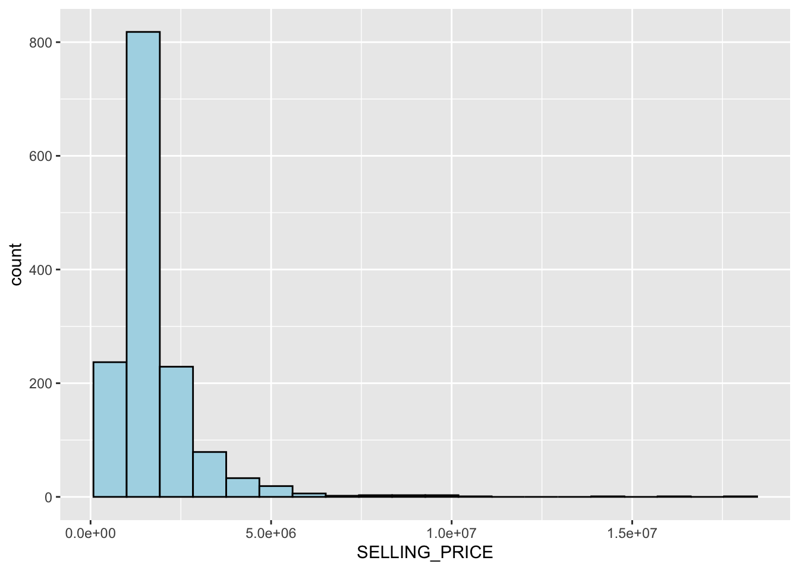
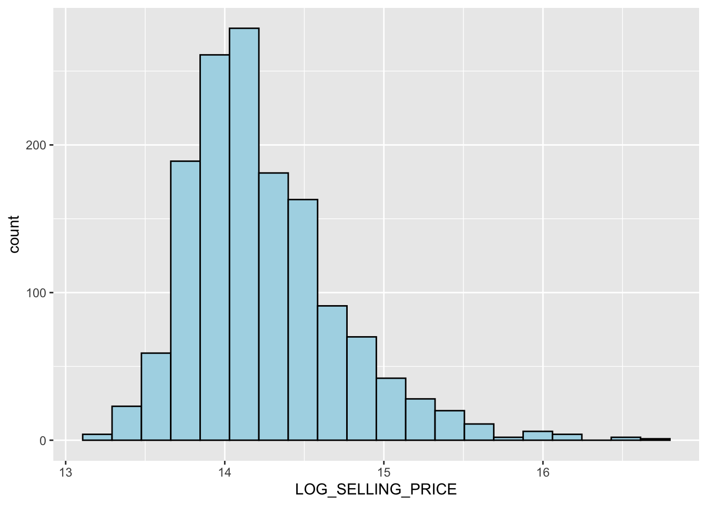
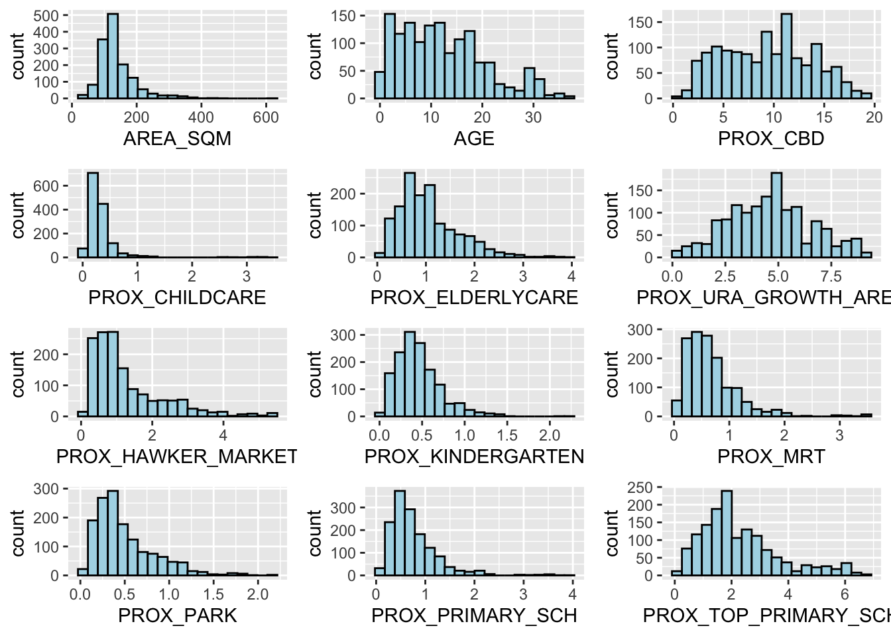
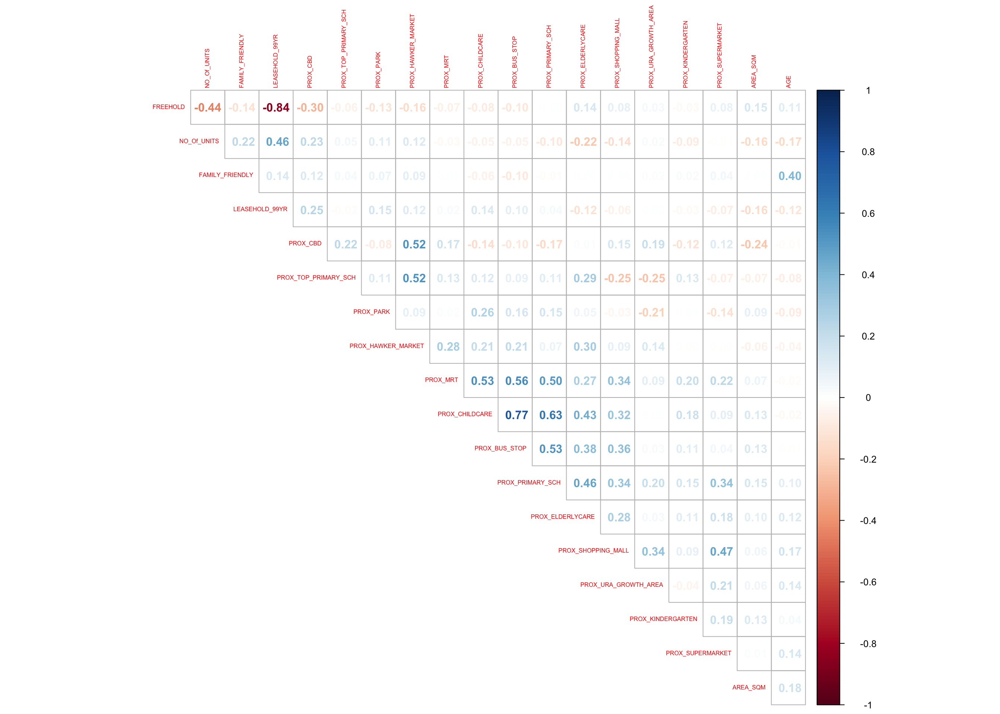
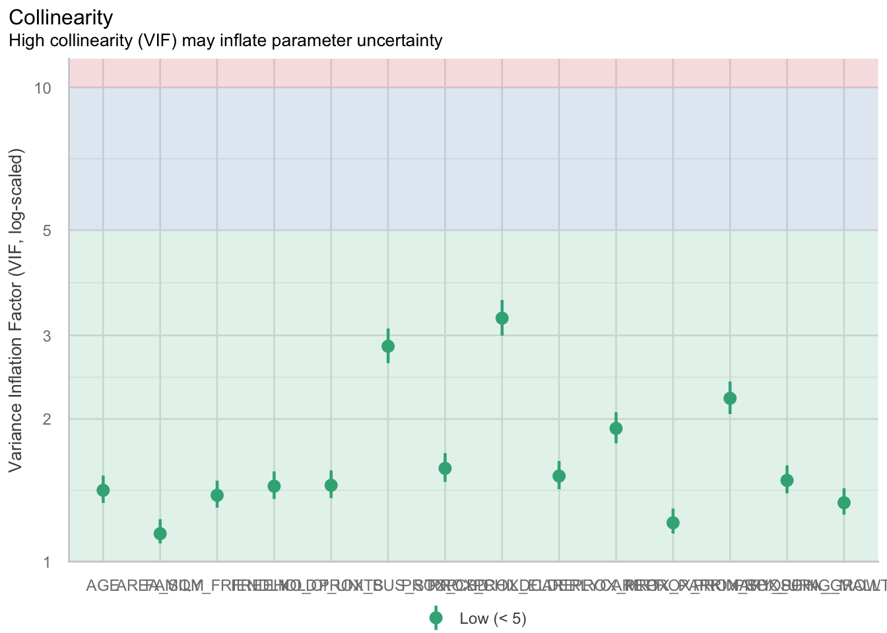
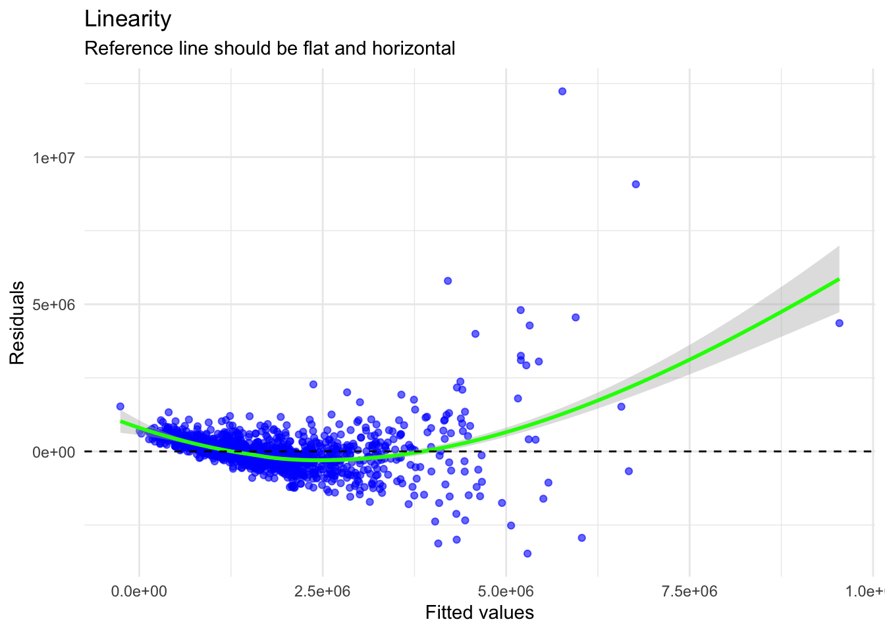
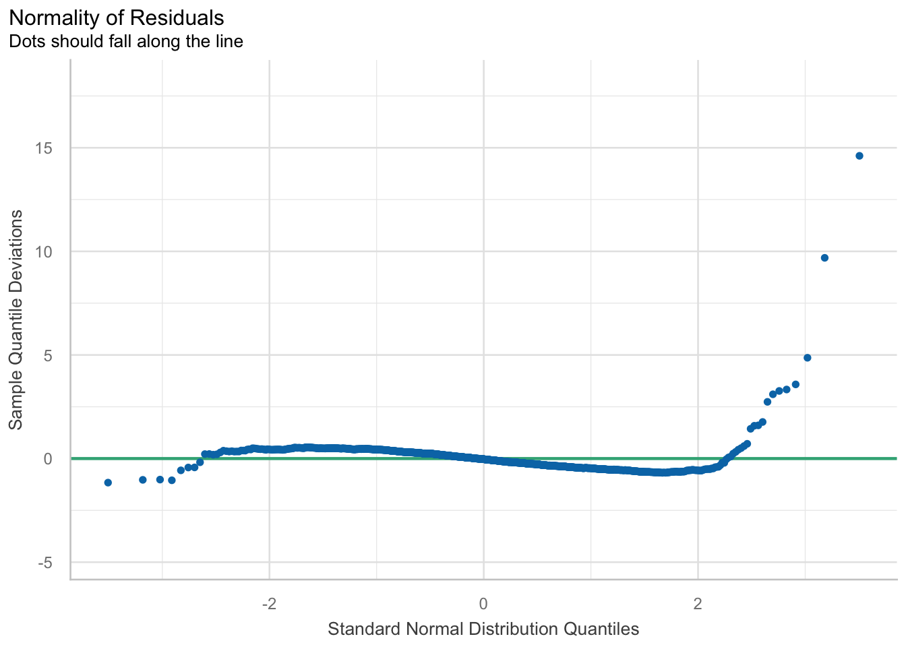
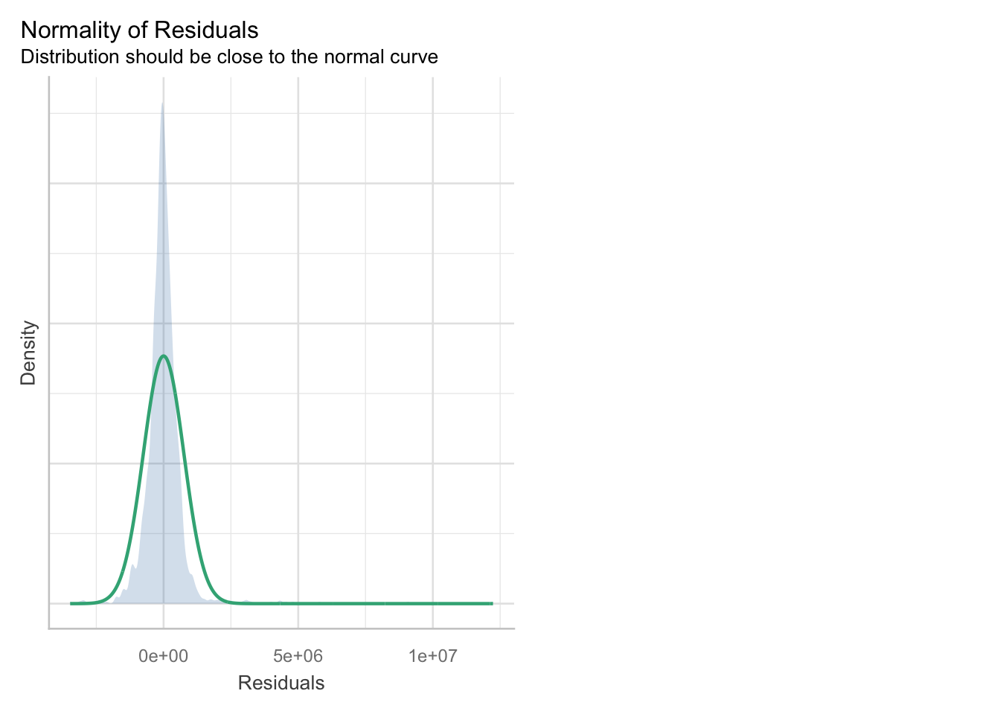
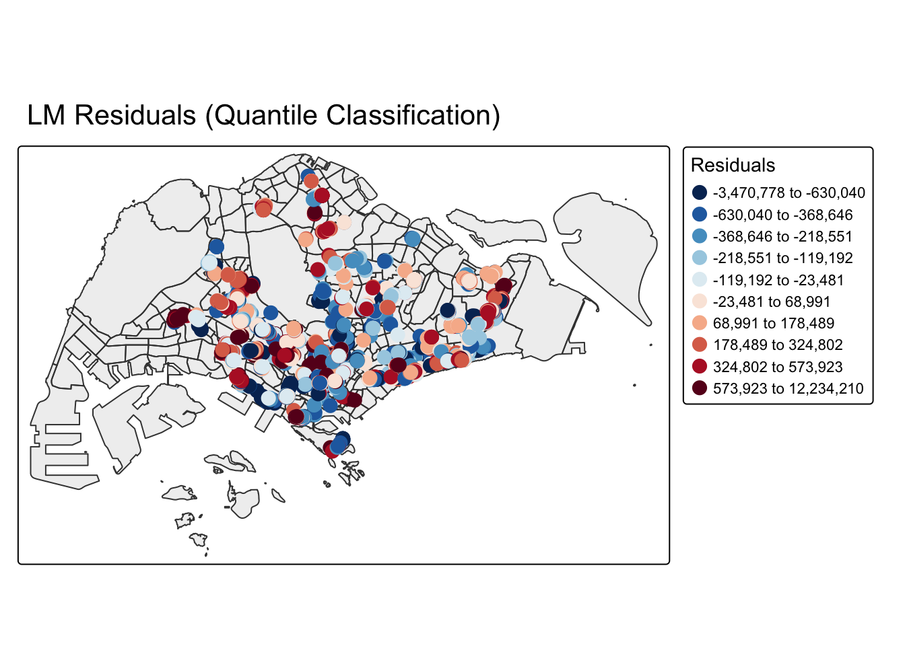
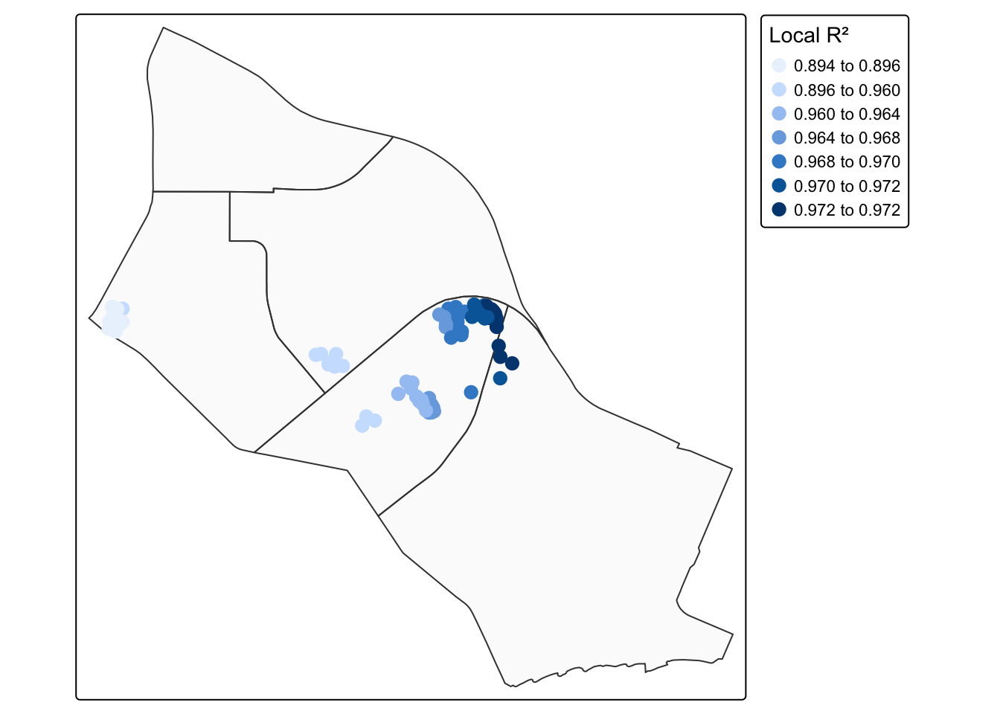

# Install and load all required packages in one call --------------------------------
# pacman::p_load() will install any missing packages and then load them into memory
pacman::p_load(olsrr, corrplot, ggpubr,
sf, sfdep, GWmodel, tmap,
tidyverse, gtsummary,
performance, RColorBrewer, see)In-class_Ex07: Calibrating Hedonic Pricing Model for Private Highrise Property with GWR Method
1 Overview
Geographically Weighted Regression (GWR) allows relationships between predictors (independent variables) and an outcome (dependent variable) to vary by location. In hedonic pricing, we model the resale prices of condominium units using structural factors (e.g., floor area, age) and locational accessibility (e.g., proximity to transport, parks, schools).
2 The Data
Geospatial: MP14_SUBZONE_WEB_PL (subzone polygons; SVY21 projection).
Aspatial: Condo_resale_2015.csv with columns such as SELLING_PRICE, AREA_SQM, AGE, and multiple proximity variables (in kilometers) to amenities (MRT, parks, schools, etc.).
3 Getting Started
Before we get started, it is important for us to install the necessary R packages into R and launch these R packages into R environment.
The R packages needed for this exercise are as follows:
- sf: spatial vector data handling; projections.
- sfdep: spatial weights and Moran’s I with tidy‑sf interface.
- GWmodel: GWR bandwidth search and model fitting.
- tmap: static/interactive maps.
- tidyverse: wrangling (dplyr, readr, ggplot2).
- olsrr, performance: OLS diagnostics, VIF, assumption checks.
- corrplot: correlation matrix visual.
- gtsummary: publication‑quality regression tables.
- RColorBrewer: color palettes for maps.
4 Geospatial Data Wrangling
4.1 Importing geospatial data
# Read the URA Master Plan 2014 subzone shapefile
# dsn: directory; layer: shapefile base name without extension
mpsz = st_read(dsn = "/Users/cktan/Desktop/SMU/01_Geospatial Analytics (ISSS626)/Hands-on_Ex/Hands-on_Ex07/data/geospatial",
layer = "MP14_SUBZONE_WEB_PL")Reading layer `MP14_SUBZONE_WEB_PL' from data source
`/Users/cktan/Desktop/SMU/01_Geospatial Analytics (ISSS626)/Hands-on_Ex/Hands-on_Ex07/data/geospatial'
using driver `ESRI Shapefile'
Simple feature collection with 323 features and 15 fields
Geometry type: MULTIPOLYGON
Dimension: XY
Bounding box: xmin: 2667.538 ymin: 15748.72 xmax: 56396.44 ymax: 50256.33
Projected CRS: SVY214.2 Updating CRS information to EPSG:3414 (SVY21 meters)
# Transform the coordinate reference system to SVY21 / EPSG:3414
# This ensures all distance‑based operations use meters (required by GWR bandwidth)
mpsz_svy21 <- st_transform(mpsz, 3414)# Verify the target CRS
st_crs(mpsz_svy21)Coordinate Reference System:
User input: EPSG:3414
wkt:
PROJCRS["SVY21 / Singapore TM",
BASEGEOGCRS["SVY21",
DATUM["SVY21",
ELLIPSOID["WGS 84",6378137,298.257223563,
LENGTHUNIT["metre",1]]],
PRIMEM["Greenwich",0,
ANGLEUNIT["degree",0.0174532925199433]],
ID["EPSG",4757]],
CONVERSION["Singapore Transverse Mercator",
METHOD["Transverse Mercator",
ID["EPSG",9807]],
PARAMETER["Latitude of natural origin",1.36666666666667,
ANGLEUNIT["degree",0.0174532925199433],
ID["EPSG",8801]],
PARAMETER["Longitude of natural origin",103.833333333333,
ANGLEUNIT["degree",0.0174532925199433],
ID["EPSG",8802]],
PARAMETER["Scale factor at natural origin",1,
SCALEUNIT["unity",1],
ID["EPSG",8805]],
PARAMETER["False easting",28001.642,
LENGTHUNIT["metre",1],
ID["EPSG",8806]],
PARAMETER["False northing",38744.572,
LENGTHUNIT["metre",1],
ID["EPSG",8807]]],
CS[Cartesian,2],
AXIS["northing (N)",north,
ORDER[1],
LENGTHUNIT["metre",1]],
AXIS["easting (E)",east,
ORDER[2],
LENGTHUNIT["metre",1]],
USAGE[
SCOPE["Cadastre, engineering survey, topographic mapping."],
AREA["Singapore - onshore and offshore."],
BBOX[1.13,103.59,1.47,104.07]],
ID["EPSG",3414]]Next, inspect layer extent (bounding box)
st_bbox(mpsz_svy21) xmin ymin xmax ymax
2667.538 15748.721 56396.440 50256.334 The print above reports the extent of mpsz_svy21 layer by its lower and upper limits.
5 Aspatial Data Wrangling
5.1 Importing the aspatial data and inspect
# Read the 2015 condo resale dataset as a tibble
condo_resale = read_csv(
"/Users/cktan/Desktop/SMU/01_Geospatial Analytics (ISSS626)/Hands-on_Ex/Hands-on_Ex07/data/aspatial/Condo_resale_2015.csv")Rows: 1436 Columns: 23
── Column specification ────────────────────────────────────────────────────────
Delimiter: ","
dbl (23): LATITUDE, LONGITUDE, POSTCODE, SELLING_PRICE, AREA_SQM, AGE, PROX_...
ℹ Use `spec()` to retrieve the full column specification for this data.
ℹ Specify the column types or set `show_col_types = FALSE` to quiet this message.# Peek at structure: variable names, types, first few rows
glimpse(condo_resale)Rows: 1,436
Columns: 23
$ LATITUDE <dbl> 1.287145, 1.328698, 1.313727, 1.308563, 1.321437,…
$ LONGITUDE <dbl> 103.7802, 103.8123, 103.7971, 103.8247, 103.9505,…
$ POSTCODE <dbl> 118635, 288420, 267833, 258380, 467169, 466472, 3…
$ SELLING_PRICE <dbl> 3000000, 3880000, 3325000, 4250000, 1400000, 1320…
$ AREA_SQM <dbl> 309, 290, 248, 127, 145, 139, 218, 141, 165, 168,…
$ AGE <dbl> 30, 32, 33, 7, 28, 22, 24, 24, 27, 31, 17, 22, 6,…
$ PROX_CBD <dbl> 7.941259, 6.609797, 6.898000, 4.038861, 11.783402…
$ PROX_CHILDCARE <dbl> 0.16597932, 0.28027246, 0.42922669, 0.39473543, 0…
$ PROX_ELDERLYCARE <dbl> 2.5198118, 1.9333338, 0.5021395, 1.9910316, 1.121…
$ PROX_URA_GROWTH_AREA <dbl> 6.618741, 7.505109, 6.463887, 4.906512, 6.410632,…
$ PROX_HAWKER_MARKET <dbl> 1.76542207, 0.54507614, 0.37789301, 1.68259969, 0…
$ PROX_KINDERGARTEN <dbl> 0.05835552, 0.61592412, 0.14120309, 0.38200076, 0…
$ PROX_MRT <dbl> 0.5607188, 0.6584461, 0.3053433, 0.6910183, 0.528…
$ PROX_PARK <dbl> 1.1710446, 0.1992269, 0.2779886, 0.9832843, 0.116…
$ PROX_PRIMARY_SCH <dbl> 1.6340256, 0.9747834, 1.4715016, 1.4546324, 0.709…
$ PROX_TOP_PRIMARY_SCH <dbl> 3.3273195, 0.9747834, 1.4715016, 2.3006394, 0.709…
$ PROX_SHOPPING_MALL <dbl> 2.2102717, 2.9374279, 1.2256850, 0.3525671, 1.307…
$ PROX_SUPERMARKET <dbl> 0.9103958, 0.5900617, 0.4135583, 0.4162219, 0.581…
$ PROX_BUS_STOP <dbl> 0.10336166, 0.28673408, 0.28504777, 0.29872340, 0…
$ NO_Of_UNITS <dbl> 18, 20, 27, 30, 30, 31, 32, 32, 32, 32, 34, 34, 3…
$ FAMILY_FRIENDLY <dbl> 0, 0, 0, 0, 0, 1, 1, 0, 1, 1, 0, 0, 0, 0, 0, 0, 0…
$ FREEHOLD <dbl> 1, 1, 1, 1, 1, 1, 1, 1, 1, 0, 1, 1, 1, 1, 1, 1, 1…
$ LEASEHOLD_99YR <dbl> 0, 0, 0, 0, 0, 0, 0, 0, 0, 0, 0, 0, 0, 0, 0, 0, 0…head(condo_resale$LONGITUDE)[1] 103.7802 103.8123 103.7971 103.8247 103.9505 103.9386head(condo_resale$LATITUDE)[1] 1.287145 1.328698 1.313727 1.308563 1.321437 1.314198The print above reveals that the values of LONGITITUDE and LATITUDE fields are in decimal degree. Most probably wgs84 geographic coordinate system is used.
# Quick descriptive statistics for all columns
summary(condo_resale) LATITUDE LONGITUDE POSTCODE SELLING_PRICE
Min. :1.240 Min. :103.7 Min. : 18965 Min. : 540000
1st Qu.:1.309 1st Qu.:103.8 1st Qu.:259849 1st Qu.: 1100000
Median :1.328 Median :103.8 Median :469298 Median : 1383222
Mean :1.334 Mean :103.8 Mean :440439 Mean : 1751211
3rd Qu.:1.357 3rd Qu.:103.9 3rd Qu.:589486 3rd Qu.: 1950000
Max. :1.454 Max. :104.0 Max. :828833 Max. :18000000
AREA_SQM AGE PROX_CBD PROX_CHILDCARE
Min. : 34.0 Min. : 0.00 Min. : 0.3869 Min. :0.004927
1st Qu.:103.0 1st Qu.: 5.00 1st Qu.: 5.5574 1st Qu.:0.174481
Median :121.0 Median :11.00 Median : 9.3567 Median :0.258135
Mean :136.5 Mean :12.14 Mean : 9.3254 Mean :0.326313
3rd Qu.:156.0 3rd Qu.:18.00 3rd Qu.:12.6661 3rd Qu.:0.368293
Max. :619.0 Max. :37.00 Max. :19.1804 Max. :3.465726
PROX_ELDERLYCARE PROX_URA_GROWTH_AREA PROX_HAWKER_MARKET PROX_KINDERGARTEN
Min. :0.05451 Min. :0.2145 Min. :0.05182 Min. :0.004927
1st Qu.:0.61254 1st Qu.:3.1643 1st Qu.:0.55245 1st Qu.:0.276345
Median :0.94179 Median :4.6186 Median :0.90842 Median :0.413385
Mean :1.05351 Mean :4.5981 Mean :1.27987 Mean :0.458903
3rd Qu.:1.35122 3rd Qu.:5.7550 3rd Qu.:1.68578 3rd Qu.:0.578474
Max. :3.94916 Max. :9.1554 Max. :5.37435 Max. :2.229045
PROX_MRT PROX_PARK PROX_PRIMARY_SCH PROX_TOP_PRIMARY_SCH
Min. :0.05278 Min. :0.02906 Min. :0.07711 Min. :0.07711
1st Qu.:0.34646 1st Qu.:0.26211 1st Qu.:0.44024 1st Qu.:1.34451
Median :0.57430 Median :0.39926 Median :0.63505 Median :1.88213
Mean :0.67316 Mean :0.49802 Mean :0.75471 Mean :2.27347
3rd Qu.:0.84844 3rd Qu.:0.65592 3rd Qu.:0.95104 3rd Qu.:2.90954
Max. :3.48037 Max. :2.16105 Max. :3.92899 Max. :6.74819
PROX_SHOPPING_MALL PROX_SUPERMARKET PROX_BUS_STOP NO_Of_UNITS
Min. :0.0000 Min. :0.0000 Min. :0.001595 Min. : 18.0
1st Qu.:0.5258 1st Qu.:0.3695 1st Qu.:0.098356 1st Qu.: 188.8
Median :0.9357 Median :0.5687 Median :0.151710 Median : 360.0
Mean :1.0455 Mean :0.6141 Mean :0.193974 Mean : 409.2
3rd Qu.:1.3994 3rd Qu.:0.7862 3rd Qu.:0.220466 3rd Qu.: 590.0
Max. :3.4774 Max. :2.2441 Max. :2.476639 Max. :1703.0
FAMILY_FRIENDLY FREEHOLD LEASEHOLD_99YR
Min. :0.0000 Min. :0.0000 Min. :0.0000
1st Qu.:0.0000 1st Qu.:0.0000 1st Qu.:0.0000
Median :0.0000 Median :0.0000 Median :0.0000
Mean :0.4868 Mean :0.4227 Mean :0.4882
3rd Qu.:1.0000 3rd Qu.:1.0000 3rd Qu.:1.0000
Max. :1.0000 Max. :1.0000 Max. :1.0000 5.2 Converting aspatial data frame into a sf object
# Convert LONGITUDE/LATITUDE (WGS84) to POINT geometry and reproject to SVY21
# 1) st_as_sf(): declare coordinates (lon, lat) with crs=4326 (WGS84 degrees)
# 2) st_transform(): project to EPSG:3414 so distances are in meters
condo_resale.sf <- st_as_sf(condo_resale,
coords = c("LONGITUDE", "LATITUDE"),
crs = 4326) %>%
st_transform(crs = 3414)
Note
Notice that st_transform() of sf package is used to convert the coordinates from wgs84 (i.e. crs:4326) to svy21 (i.e. crs=3414).
# Confirm the first few records including geometry
head(condo_resale.sf)Simple feature collection with 6 features and 21 fields
Geometry type: POINT
Dimension: XY
Bounding box: xmin: 22085.12 ymin: 29951.54 xmax: 41042.56 ymax: 34546.2
Projected CRS: SVY21 / Singapore TM
# A tibble: 6 × 22
POSTCODE SELLING_PRICE AREA_SQM AGE PROX_CBD PROX_CHILDCARE PROX_ELDERLYCARE
<dbl> <dbl> <dbl> <dbl> <dbl> <dbl> <dbl>
1 118635 3000000 309 30 7.94 0.166 2.52
2 288420 3880000 290 32 6.61 0.280 1.93
3 267833 3325000 248 33 6.90 0.429 0.502
4 258380 4250000 127 7 4.04 0.395 1.99
5 467169 1400000 145 28 11.8 0.119 1.12
6 466472 1320000 139 22 10.3 0.125 0.789
# ℹ 15 more variables: PROX_URA_GROWTH_AREA <dbl>, PROX_HAWKER_MARKET <dbl>,
# PROX_KINDERGARTEN <dbl>, PROX_MRT <dbl>, PROX_PARK <dbl>,
# PROX_PRIMARY_SCH <dbl>, PROX_TOP_PRIMARY_SCH <dbl>,
# PROX_SHOPPING_MALL <dbl>, PROX_SUPERMARKET <dbl>, PROX_BUS_STOP <dbl>,
# NO_Of_UNITS <dbl>, FAMILY_FRIENDLY <dbl>, FREEHOLD <dbl>,
# LEASEHOLD_99YR <dbl>, geometry <POINT [m]>Notice that the output is in point feature data frame.
6 Exploratory Data Analysis (EDA)
6.1 EDA using statistical graphics
We can plot the distribution of SELLING_PRICE by using appropriate Exploratory Data Analysis (EDA) as shown in the code chunk below.
# Plot raw SELLING_PRICE distribution
# aes(x=SELLING_PRICE) maps the price variable to the x‑axis for a histogram
ggplot(data = condo_resale.sf,
aes(x = `SELLING_PRICE`)) +
geom_histogram(bins = 20, # 20 equal‑width bins
color = "black", # black outline for readability
fill = "light blue") # soft fill color for clarity
The figure above reveals a right skewed distribution. This means that more condominium units were transacted at relative lower prices.
Statistically, the skewed dsitribution can be normalised by using log transformation. The code chunk below is used to derive a new variable called LOG_SELLING_PRICE by using a log transformation on the variable SELLING_PRICE. It is performed using mutate() of dplyr package.
# Create a log‑price to reduce skewness
# mutate() adds a new variable LOG_SELLING_PRICE = log(SELLING_PRICE)
condo_resale.sf <- condo_resale.sf %>%
mutate(`LOG_SELLING_PRICE` = log(SELLING_PRICE))Now, we can plot the LOG_SELLING_PRICE using the code chunk below.
# Plot the log‑transformed price distribution -----------------------------------
ggplot(data = condo_resale.sf,
aes(x = `LOG_SELLING_PRICE`)) +
geom_histogram(bins = 20,
color = "black",
fill = "light blue")
Notice that the distribution is relatively less skewed after the transformation.
6.2 Multiple Histogram Plots distribution of variables
n this section, we will learn how to draw a small multiple histograms (also known as trellis plot) by using ggarrange() of ggpubr package.
The code chunk below is used to create 12 histograms. Then, ggarrange() is used to organised these histogram into a 3 columns by 4 rows small multiple plot.
# Build individual histograms for key predictors ---------------------------------
AREA_SQM <- ggplot(data = condo_resale.sf, aes(x = `AREA_SQM`)) +
geom_histogram(bins = 20, color = "black", fill = "light blue")
AGE <- ggplot(data = condo_resale.sf, aes(x = `AGE`)) +
geom_histogram(bins = 20, color = "black", fill = "light blue")
PROX_CBD <- ggplot(data = condo_resale.sf, aes(x = `PROX_CBD`)) +
geom_histogram(bins = 20, color = "black", fill = "light blue")
PROX_CHILDCARE <- ggplot(data = condo_resale.sf, aes(x = `PROX_CHILDCARE`)) +
geom_histogram(bins = 20, color = "black", fill = "light blue")
PROX_ELDERLYCARE <- ggplot(data = condo_resale.sf, aes(x = `PROX_ELDERLYCARE`)) +
geom_histogram(bins = 20, color = "black", fill = "light blue")
PROX_URA_GROWTH_AREA <- ggplot(data = condo_resale.sf, aes(x = `PROX_URA_GROWTH_AREA`)) +
geom_histogram(bins = 20, color = "black", fill = "light blue")
PROX_HAWKER_MARKET <- ggplot(data = condo_resale.sf, aes(x = `PROX_HAWKER_MARKET`)) +
geom_histogram(bins = 20, color = "black", fill = "light blue")
PROX_KINDERGARTEN <- ggplot(data = condo_resale.sf, aes(x = `PROX_KINDERGARTEN`)) +
geom_histogram(bins = 20, color = "black", fill = "light blue")
PROX_MRT <- ggplot(data = condo_resale.sf, aes(x = `PROX_MRT`)) +
geom_histogram(bins = 20, color = "black", fill = "light blue")
PROX_PARK <- ggplot(data = condo_resale.sf, aes(x = `PROX_PARK`)) +
geom_histogram(bins = 20, color = "black", fill = "light blue")
PROX_PRIMARY_SCH <- ggplot(data = condo_resale.sf, aes(x = `PROX_PRIMARY_SCH`)) +
geom_histogram(bins = 20, color = "black", fill = "light blue")
PROX_TOP_PRIMARY_SCH <- ggplot(data = condo_resale.sf, aes(x = `PROX_TOP_PRIMARY_SCH`)) +
geom_histogram(bins = 20, color = "black", fill = "light blue")
# Arrange the 12 histograms into a 3x4 panel ------------------------------------
# ggarrange() helps create small‑multiples (trellis) display
ggarrange(AREA_SQM, AGE, PROX_CBD, PROX_CHILDCARE,
PROX_ELDERLYCARE, PROX_URA_GROWTH_AREA,
PROX_HAWKER_MARKET, PROX_KINDERGARTEN, PROX_MRT,
PROX_PARK, PROX_PRIMARY_SCH, PROX_TOP_PRIMARY_SCH,
ncol = 3, nrow = 4)
7 Hedonic Pricing Modelling in R
In this section, we will learn how to building hedonic pricing models for condominium resale units using lm() of R base.
7.1 Simple Linear Regression (SLR): SELLING_PRICE ~ AREA_SQM
# Fit a simple linear regression with floor area as the only predictor ------------
condo.slr <- lm(formula = SELLING_PRICE ~ AREA_SQM,
data = condo_resale.sf)# Print model summary: coefficients, R², p‑values, residual spread ----------------
summary(condo.slr)
Call:
lm(formula = SELLING_PRICE ~ AREA_SQM, data = condo_resale.sf)
Residuals:
Min 1Q Median 3Q Max
-3695815 -391764 -87517 258900 13503875
Coefficients:
Estimate Std. Error t value Pr(>|t|)
(Intercept) -258121.1 63517.2 -4.064 5.09e-05 ***
AREA_SQM 14719.0 428.1 34.381 < 2e-16 ***
---
Signif. codes: 0 '***' 0.001 '**' 0.01 '*' 0.05 '.' 0.1 ' ' 1
Residual standard error: 942700 on 1434 degrees of freedom
Multiple R-squared: 0.4518, Adjusted R-squared: 0.4515
F-statistic: 1182 on 1 and 1434 DF, p-value: < 2.2e-16The output report reveals that the SELLING_PRICE can be explained by using the formula:
\[\text{Selling_Price} = -258121.1 + 14719\cdot\text{Area_SQM}\]
The R-squared of 0.4518 reveals that the simple regression model built is able to explain about 45% of the resale prices.
Since p-value is much smaller than 0.0001, we will reject the null hypothesis that mean is a good estimator of SELLING_PRICE. This will allow us to infer that simple linear regression model above is a good estimator of SELLING_PRICE.
The Coefficients: section of the report reveals that the p-values of both the estimates of the Intercept and ARA_SQM are smaller than 0.001. In view of this, the null hypothesis of the B0 and B1 are equal to 0 will be rejected. As a results, we will be able to infer that the B0 and B1 are good parameter estimates.
To visualise the best fit curve on a scatterplot, we can incorporate lm() as a method function in ggplot’s geometry as shown in the code chunk below.
# Visualize scatter with best‑fit line from lm() ---------------------------------
# geom_smooth(method = lm) overlays the OLS regression line with CI ribbon
ggplot(data = condo_resale.sf,
aes(x = `AREA_SQM`, y = `SELLING_PRICE`)) +
geom_point() +
geom_smooth(method = lm)`geom_smooth()` using formula = 'y ~ x'
Figure above reveals that there are a few statistical outliers with relatively high selling prices.
7.2 Multiple Linear Regression Method
7.2.1 Visualising the relationships of the independent variables
Before building a multiple regression model, it is important to ensure that the indepdent variables used are not highly correlated to each other. If these highly correlated independent variables are used in building a regression model by mistake, the quality of the model will be compromised. This phenomenon is known as multicollinearity in statistics.
Correlation matrix is commonly used to visualise the relationships between the independent variables. Beside the pairs() of R, there are many packages support the display of a correlation matrix. In this section, the corrplot package will be used.
The code chunk below is used to plot a scatterplot matrix of the relationship between the independent variables in condo_resale data.frame.
# Visualize pairwise correlations among predictors (cols 5:23 from the CSV) ------
corrplot(cor(condo_resale[, 5:23]),
diag = FALSE,
order = "AOE", # Angular Order of Eigenvectors (stable ordering)
tl.pos = "td", # text labels on top diagonal
tl.cex = 0.5, # smaller text
method = "number", # print numeric correlations
type = "upper") # upper triangle only
Matrix reorder is very important for mining the hiden structure and patter in the matrix. There are four methods in corrplot (parameter order), named “AOE”, “FPC”, “hclust”, “alphabet”. In the code chunk above, AOE order is used. It orders the variables by using the angular order of the eigenvectors method suggested by Michael Friendly.
From the scatterplot matrix, it is clear that Freehold is highly correlated to LEASE_99YEAR. In view of this, it is wiser to only include either one of them in the subsequent model building. As a result, LEASE_99YEAR is excluded in the subsequent model building.
7.3 Building a hedonic pricing model using multiple linear regression method
The code chunk below using lm() to calibrate the multiple linear regression model.
# Build the full hedonic model (drop LEASEHOLD_99YR to avoid high correlation) ---
condo.mlr <- lm(
formula = SELLING_PRICE ~ AREA_SQM + AGE +
PROX_CBD + PROX_CHILDCARE + PROX_ELDERLYCARE +
PROX_URA_GROWTH_AREA + PROX_HAWKER_MARKET +
PROX_KINDERGARTEN + PROX_MRT + PROX_PARK +
PROX_PRIMARY_SCH + PROX_TOP_PRIMARY_SCH +
PROX_SHOPPING_MALL + PROX_SUPERMARKET +
PROX_BUS_STOP + NO_Of_UNITS +
FAMILY_FRIENDLY + FREEHOLD,
data=condo_resale.sf)
summary(condo.mlr)
Call:
lm(formula = SELLING_PRICE ~ AREA_SQM + AGE + PROX_CBD + PROX_CHILDCARE +
PROX_ELDERLYCARE + PROX_URA_GROWTH_AREA + PROX_HAWKER_MARKET +
PROX_KINDERGARTEN + PROX_MRT + PROX_PARK + PROX_PRIMARY_SCH +
PROX_TOP_PRIMARY_SCH + PROX_SHOPPING_MALL + PROX_SUPERMARKET +
PROX_BUS_STOP + NO_Of_UNITS + FAMILY_FRIENDLY + FREEHOLD,
data = condo_resale.sf)
Residuals:
Min 1Q Median 3Q Max
-3475964 -293923 -23069 241043 12260381
Coefficients:
Estimate Std. Error t value Pr(>|t|)
(Intercept) 481728.40 121441.01 3.967 7.65e-05 ***
AREA_SQM 12708.32 369.59 34.385 < 2e-16 ***
AGE -24440.82 2763.16 -8.845 < 2e-16 ***
PROX_CBD -78669.78 6768.97 -11.622 < 2e-16 ***
PROX_CHILDCARE -351617.91 109467.25 -3.212 0.00135 **
PROX_ELDERLYCARE 171029.42 42110.51 4.061 5.14e-05 ***
PROX_URA_GROWTH_AREA 38474.53 12523.57 3.072 0.00217 **
PROX_HAWKER_MARKET 23746.10 29299.76 0.810 0.41782
PROX_KINDERGARTEN 147468.99 82668.87 1.784 0.07466 .
PROX_MRT -314599.68 57947.44 -5.429 6.66e-08 ***
PROX_PARK 563280.50 66551.68 8.464 < 2e-16 ***
PROX_PRIMARY_SCH 180186.08 65237.95 2.762 0.00582 **
PROX_TOP_PRIMARY_SCH 2280.04 20410.43 0.112 0.91107
PROX_SHOPPING_MALL -206604.06 42840.60 -4.823 1.57e-06 ***
PROX_SUPERMARKET -44991.80 77082.64 -0.584 0.55953
PROX_BUS_STOP 683121.35 138353.28 4.938 8.85e-07 ***
NO_Of_UNITS -231.18 89.03 -2.597 0.00951 **
FAMILY_FRIENDLY 140340.77 47020.55 2.985 0.00289 **
FREEHOLD 359913.01 49220.22 7.312 4.38e-13 ***
---
Signif. codes: 0 '***' 0.001 '**' 0.01 '*' 0.05 '.' 0.1 ' ' 1
Residual standard error: 755800 on 1417 degrees of freedom
Multiple R-squared: 0.6518, Adjusted R-squared: 0.6474
F-statistic: 147.4 on 18 and 1417 DF, p-value: < 2.2e-16
Note
The code chunk above consists of two parts:
- lm() of Base R is used to calibrate a multiple linear regression model. The model output is stored in an lm object called condo.mlr.
- summary() is used to print the model output.
7.4 Revising the model by removing non-significant predictors
With reference to the report above, it is clear that not all the independent variables are statistically significant. We will revised the model by removing those variables which are not statistically significant.
Now, we are ready to calibrate the revised model by using the code chunk below.
# Remove variables with weak significance to improve parsimony -------------------
condo.mlr1 <- lm(
formula = SELLING_PRICE ~ AREA_SQM + AGE +
PROX_CBD + PROX_CHILDCARE + PROX_MRT +
PROX_ELDERLYCARE + PROX_URA_GROWTH_AREA +
PROX_PARK + PROX_PRIMARY_SCH +
PROX_SHOPPING_MALL + PROX_BUS_STOP +
NO_Of_UNITS + FAMILY_FRIENDLY + FREEHOLD,
data = condo_resale.sf)# Verify all retained predictors are significant at 5% (or better) ---------------
summary(condo.mlr1)
Call:
lm(formula = SELLING_PRICE ~ AREA_SQM + AGE + PROX_CBD + PROX_CHILDCARE +
PROX_MRT + PROX_ELDERLYCARE + PROX_URA_GROWTH_AREA + PROX_PARK +
PROX_PRIMARY_SCH + PROX_SHOPPING_MALL + PROX_BUS_STOP + NO_Of_UNITS +
FAMILY_FRIENDLY + FREEHOLD, data = condo_resale.sf)
Residuals:
Min 1Q Median 3Q Max
-3470778 -298119 -23481 248917 12234210
Coefficients:
Estimate Std. Error t value Pr(>|t|)
(Intercept) 527633.22 108183.22 4.877 1.20e-06 ***
AREA_SQM 12777.52 367.48 34.771 < 2e-16 ***
AGE -24687.74 2754.84 -8.962 < 2e-16 ***
PROX_CBD -77131.32 5763.12 -13.384 < 2e-16 ***
PROX_CHILDCARE -318472.75 107959.51 -2.950 0.003231 **
PROX_MRT -294745.11 56916.37 -5.179 2.56e-07 ***
PROX_ELDERLYCARE 185575.62 39901.86 4.651 3.61e-06 ***
PROX_URA_GROWTH_AREA 39163.25 11754.83 3.332 0.000885 ***
PROX_PARK 570504.81 65507.03 8.709 < 2e-16 ***
PROX_PRIMARY_SCH 159856.14 60234.60 2.654 0.008046 **
PROX_SHOPPING_MALL -220947.25 36561.83 -6.043 1.93e-09 ***
PROX_BUS_STOP 682482.22 134513.24 5.074 4.42e-07 ***
NO_Of_UNITS -245.48 87.95 -2.791 0.005321 **
FAMILY_FRIENDLY 146307.58 46893.02 3.120 0.001845 **
FREEHOLD 350599.81 48506.48 7.228 7.98e-13 ***
---
Signif. codes: 0 '***' 0.001 '**' 0.01 '*' 0.05 '.' 0.1 ' ' 1
Residual standard error: 756000 on 1421 degrees of freedom
Multiple R-squared: 0.6507, Adjusted R-squared: 0.6472
F-statistic: 189.1 on 14 and 1421 DF, p-value: < 2.2e-16The output above reveals that all explanatory variables are statistically significant at 95% confident level.
7.5 Preparing Publication Quality Table: gtsummary method
The gtsummary package provides an elegant and flexible way to create publication-ready summary tables in R.
In the code chunk below, tbl_regression() is used to create a well formatted regression report.
# Create a clean table of coefficients, CIs, and p‑values
tbl_regression(condo.mlr1, intercept = TRUE)| Characteristic | Beta | 95% CI | p-value |
|---|---|---|---|
| (Intercept) | 527,633 | 315,417, 739,849 | <0.001 |
| AREA_SQM | 12,778 | 12,057, 13,498 | <0.001 |
| AGE | -24,688 | -30,092, -19,284 | <0.001 |
| PROX_CBD | -77,131 | -88,436, -65,826 | <0.001 |
| PROX_CHILDCARE | -318,473 | -530,250, -106,696 | 0.003 |
| PROX_MRT | -294,745 | -406,394, -183,096 | <0.001 |
| PROX_ELDERLYCARE | 185,576 | 107,303, 263,849 | <0.001 |
| PROX_URA_GROWTH_AREA | 39,163 | 16,105, 62,222 | <0.001 |
| PROX_PARK | 570,505 | 442,004, 699,006 | <0.001 |
| PROX_PRIMARY_SCH | 159,856 | 41,698, 278,014 | 0.008 |
| PROX_SHOPPING_MALL | -220,947 | -292,668, -149,226 | <0.001 |
| PROX_BUS_STOP | 682,482 | 418,616, 946,348 | <0.001 |
| NO_Of_UNITS | -245 | -418, -73 | 0.005 |
| FAMILY_FRIENDLY | 146,308 | 54,321, 238,295 | 0.002 |
| FREEHOLD | 350,600 | 255,448, 445,752 | <0.001 |
| Abbreviation: CI = Confidence Interval | |||
With gtsummary package, model statistics can be included in the report by either appending them to the report table by using add_glance_table() or adding as a table source note by using add_glance_source_note() as shown in the code chunk below.
# Append model‑level statistics as a footnote (AIC, R², sigma, etc.) -------------
tbl_regression(condo.mlr1,
intercept = TRUE) %>%
add_glance_source_note(
label = list(sigma ~ "σ"), # Greek sigma symbol
include = c(r.squared, adj.r.squared,
AIC, statistic,
p.value, sigma))| Characteristic | Beta | 95% CI | p-value |
|---|---|---|---|
| (Intercept) | 527,633 | 315,417, 739,849 | <0.001 |
| AREA_SQM | 12,778 | 12,057, 13,498 | <0.001 |
| AGE | -24,688 | -30,092, -19,284 | <0.001 |
| PROX_CBD | -77,131 | -88,436, -65,826 | <0.001 |
| PROX_CHILDCARE | -318,473 | -530,250, -106,696 | 0.003 |
| PROX_MRT | -294,745 | -406,394, -183,096 | <0.001 |
| PROX_ELDERLYCARE | 185,576 | 107,303, 263,849 | <0.001 |
| PROX_URA_GROWTH_AREA | 39,163 | 16,105, 62,222 | <0.001 |
| PROX_PARK | 570,505 | 442,004, 699,006 | <0.001 |
| PROX_PRIMARY_SCH | 159,856 | 41,698, 278,014 | 0.008 |
| PROX_SHOPPING_MALL | -220,947 | -292,668, -149,226 | <0.001 |
| PROX_BUS_STOP | 682,482 | 418,616, 946,348 | <0.001 |
| NO_Of_UNITS | -245 | -418, -73 | 0.005 |
| FAMILY_FRIENDLY | 146,308 | 54,321, 238,295 | 0.002 |
| FREEHOLD | 350,600 | 255,448, 445,752 | <0.001 |
| Abbreviation: CI = Confidence Interval | |||
| R² = 0.651; Adjusted R² = 0.647; AIC = 42,967; Statistic = 189; p-value = <0.001; σ = 755,957 | |||
For more customization options, refer to Tutorial: tbl_regression.
7.6 Regression Diagnostics
Regression diagnostics are a set of procedures used to check if a regression model’s assumptions are met and how well the model fits the data. These diagnostics involve checking for issues like non-linear relationships, non-normal errors, non-constant variance, and influential observations to ensure the model’s conclusions are valid and reliable. Common methods include graphical analysis, like residual plots and QQ-plots, and quantitative tests
In this section, we would like to introduce a fantastic R package specially programmed for performing OLS regression diagnostics. It is called olsrr. It provides a collection of very useful methods for building better multiple linear regression models:
- comprehensive regression output
- residual diagnostics
- measures of influence
- heteroskedasticity tests
- collinearity diagnostics
- model fit assessment
- variable contribution assessment
- variable selection procedures
7.6.1 Multicollinearity test
Multicollinearity occurs when independent variables are not truly independent, meaning a change in one is associated with a change in another. This makes it hard for the model to isolate each variable’s influence on the outcome.
Performing a multicollinearity test is crucial in multiple linear regression because it ensures the reliability and interpretability of the model’s results. High multicollinearity, where independent variables are highly correlated, inflates the variance of the estimated coefficients, making them unstable, unreliable, and difficult to interpret. This instability can lead to misleading statistical conclusions, such as a variable appearing statistically insignificant when it is not.
In the code chunk below, the check_collinearity() of performance package is used to test if there are sign of multicollinearity.
# Check Variance Inflation Factors (VIF) to confirm low multicollinearity --------
mlr.vif <- check_collinearity(condo.mlr1) # compute VIFs
mlr.vif # print the table# Check for Multicollinearity
Low Correlation
Term VIF VIF 95% CI adj. VIF Tolerance Tolerance 95% CI
AREA_SQM 1.15 [1.09, 1.23] 1.07 0.87 [0.81, 0.92]
AGE 1.41 [1.33, 1.52] 1.19 0.71 [0.66, 0.75]
PROX_CBD 1.57 [1.47, 1.69] 1.25 0.64 [0.59, 0.68]
PROX_CHILDCARE 3.26 [3.00, 3.56] 1.81 0.31 [0.28, 0.33]
PROX_MRT 1.91 [1.78, 2.07] 1.38 0.52 [0.48, 0.56]
PROX_ELDERLYCARE 1.52 [1.42, 1.63] 1.23 0.66 [0.61, 0.70]
PROX_URA_GROWTH_AREA 1.33 [1.26, 1.43] 1.15 0.75 [0.70, 0.80]
PROX_PARK 1.21 [1.15, 1.29] 1.10 0.83 [0.77, 0.87]
PROX_PRIMARY_SCH 2.21 [2.05, 2.40] 1.49 0.45 [0.42, 0.49]
PROX_SHOPPING_MALL 1.48 [1.39, 1.60] 1.22 0.67 [0.63, 0.72]
PROX_BUS_STOP 2.85 [2.62, 3.10] 1.69 0.35 [0.32, 0.38]
NO_Of_UNITS 1.45 [1.36, 1.56] 1.20 0.69 [0.64, 0.73]
FAMILY_FRIENDLY 1.38 [1.30, 1.48] 1.17 0.72 [0.67, 0.77]
FREEHOLD 1.44 [1.36, 1.55] 1.20 0.69 [0.65, 0.74]plot(mlr.vif) # quick visual of VIF levels
Since the VIF of the independent variables are less than 10. We can safely conclude that there are no sign of multicollinearity among the independent variables.
7.6.2 Test for Non-Linearity
In multiple linear regression, it is important for us to test the assumption that linearity and additivity of the relationship between dependent and independent variables.
In the code chunk below, the ols_plot_resid_fit() of olsrr package is used to perform linearity assumption test.
#check_model(condo.mlr1, check = "linearity")
# Visual check that residuals vs fitted show no strong non‑linearity -------------
ggplot(data = data.frame(Fitted = fitted(condo.mlr1), Residuals = resid(condo.mlr1)),
aes(x = Fitted, y = Residuals)) +
geom_point(color = 'blue', alpha = 0.6) +
geom_smooth(method = 'loess', se = TRUE, color = 'green', fill = 'grey70') +
geom_hline(yintercept = 0, color = 'black', linetype = 'dashed') +
labs(title = 'Linearity', subtitle = 'Reference line should be flat and horizontal',
x = 'Fitted values', y = 'Residuals') +
theme_minimal()`geom_smooth()` using formula = 'y ~ x'
The figure above reveals that most of the data poitns are scattered around the 0 line, hence we can safely conclude that the relationships between the dependent variable and independent variables are linear.
7.6.3 Test for Normality Assumption
The normality assumption test for multiple linear regression checks if the model’s residuals (the differences between observed and predicted values) are normally distributed. This is crucial for accurate hypothesis testing and confidence intervals. To test this, we can use visual methods like histograms and Q-Q plots of the residuals, or conduct statistical tests like Shapiro-Wilk test and Kolmogorov-Smirnov test.
In the code chunk below, check_normality() of performance package is used to perform normality assumption test on condo.mlr1 model.
# Formal test (often significant with large n); complement with Q‑Q plot ---------
check_normality(condo.mlr1)Warning: Non-normality of residuals detected (p < .001).The print above reveals that the p-value of the normality assumption test is less than alpha value of 0.05. Hence we reject the normality assumption at 95% confident level.
Note
check_normality()calls stats::shapiro.test and checks the standardized residuals (or studentized residuals for mixed models) for normal distribution.
- Note that this formal test almost always yields significant results for the distribution of residuals and visual inspection (e.g. Q-Q plots) are preferable.
Instead of showing the test statistic, plot() of see package can be used to plot a the output of check_normality() for visual inspection as shown below.
# Q‑Q plot of standardized residuals from the check_normality() output -----------
plot(check_normality(condo.mlr1), type = "qq")For confidence bands, please install `qqplotr`.
Q-Q plot above below shows that majority of the data points are felt along the zero line.
Another way to check for normality assumption visual is by using check_model() of performance package as shown in the code chunk below.
# Alternative normality panel via performance::check_model -----------------------
check_model(condo.mlr1, check = "normality")
The figure reveals that the residual of the multiple linear regression model (i.e. condo.mlr1) is resemble normal distribution.
7.6.4 Testing for Spatial Autocorrelation
The hedonic model we try to build are using geographically referenced data. Hence, it is crucial to check for spatial autocorrelation because its presence can produce unreliable and misleading results. Traditional regression models, such as ordinary least squares (OLS), assume that observations are independent of one another. However, spatial data often violates this assumption.
Spatial autocorrelation is the correlation of a variable with itself across different spatial locations. Positive spatial autocorrelation means nearby features tend to be more similar, while negative autocorrelation means they tend to be more dissimilar. This phenomenon is based on the first law of geography: “Everything is related to everything else, but nearby things are more related than distant things”.
Ignoring spatial autocorrelation in a regression model can lead to serious statistical issues:
- Biased and inefficient coefficient estimates: If autocorrelation is present, standard errors of the model coefficients can be wrong, leading to unreliable hypothesis tests (p-values). The model might appear more significant than it is.
- Misleading significance tests: Standard regression models cannot distinguish between true explanatory power and the influence of spatial patterns, resulting in inaccurate p-values.
- Model misspecification: Significant spatial autocorrelation in the regression residuals often signals that important explanatory variables are missing from the model. The spatial patterning of the residuals (over- and under-predictions) can provide clues about what these missing variables might be.
- Inflated Type I error rates: Researchers might incorrectly reject a true null.
To test for spatial autocorrelation, We can run a Moran’s I test on the model’s residuals. Significant spatial autocorrelation in the residuals means the model is not capturing the full spatial story.
In order to perform spatial autocorrelation test, we need to export the residual of the hedonic pricing model and save it as a data frame first.
mlr.output <- as.data.frame(condo.mlr1$residuals)Next, we will join the newly created data frame with condo_resale.sf object.
# Extract residuals into the sf layer so we can map and test them -------------
condo_resale.sf <- cbind(condo_resale.sf,
condo.mlr1$residuals) %>%
rename(`MLR_RES` = `condo.mlr1.residuals`) # rename residual columnNext, we will use tmap package to display the distribution of the residuals on a static map.
The code chunks below is used to create a static point symbol map.
tmap_mode("plot")ℹ tmap mode set to "plot".tm_shape(mpsz_svy21) +
tm_polygons(fill_alpha = 0.4) + # semi‑transparent base
tm_shape(condo_resale.sf) +
tm_dots(
fill = "MLR_RES", # color by residual value
size = 0.7, # point size
col = "black", # thin border
fill.scale = tm_scale( # custom diverging palette
n = 10,
values = rev(brewer.pal(11, "RdBu")), # red‑blue diverging
style = "quantile",
midpoint = NA),
fill.legend = tm_legend(title = "Residuals")
) +
tm_title("LM Residuals (Quantile Classification)") +
tm_layout(legend.outside = TRUE) +
tm_view(set_zoom_limits = c(11,14))
The figure above reveal that there is sign of spatial autocorrelation.
To proof that our observation is indeed true, Global Moran’s I test will be performed
First, we will compute the distance-based weight matrix by using st_dist_band() function of sfdep.
# Build distance‑band neighbors and row‑standardized weights ------------------
condo_resale.sf <- condo_resale.sf %>%
mutate(
nb = st_dist_band(st_geometry(geometry), upper = 1500), # neighbors <= 1.5 km
wt = st_weights(nb, style = "W"), # row‑standardized W
.before = 1)Warning: There was 1 warning in `stopifnot()`.
ℹ In argument: `nb = st_dist_band(st_geometry(geometry), upper = 1500)`.
Caused by warning in `spdep::dnearneigh()`:
! neighbour object has 10 sub-graphsNext, global_moran_perm() of sfdep package will be used to perform Moran’s I test for residual spatial autocorrelation
# Permutation Moran’s I test on residuals -------------------------------------
set.seed(1234) # for reproducibility of the permutation p‑value
global_moran_perm(
condo_resale.sf$MLR_RES,
nb = condo_resale.sf$nb,
wt = condo_resale.sf$wt,
alternative = "two.sided",
nsim = 499)
Monte-Carlo simulation of Moran I
data: x
weights: listw
number of simulations + 1: 500
statistic = 0.14389, observed rank = 500, p-value < 2.2e-16
alternative hypothesis: two.sidedThe Global Moran’s I test for residual spatial autocorrelation shows that it’s p-value is less than 0.00000000000000022 which is less than the alpha value of 0.05. Hence, we will reject the null hypothesis that the residuals are randomly distributed.
Since the Observed Global Moran I = 0.14389 which is greater than 0, we can infer than the residuals resemble cluster distribution.
8 Building Hedonic Pricing Models using GWmodel
In this section, we are going to learn how to modelling hedonic pricing using both the fixed and adaptive bandwidth schemes
8.1 Building Fixed Bandwidth GWR Model
8.1.1 Computing fixed bandwith using CV and AIC approach
In the code chunk below bw.gwr() of GWModel package is used to determine the optimal fixed bandwidth to use in the model. Notice that the argument **adaptive is set to FALSE indicates that we are interested to compute the fixed bandwidth.
There are two possible approaches can be uused to determine the stopping rule, they are: CV cross-validation approach and AIC corrected (AICc) approach. We define the stopping rule using approach agreement.
8.1.1.1 Fixed bandwidth computation via CV
# Search for the optimal fixed bandwidth (in meters) using CV
bw.fixed_CV <- bw.gwr(
formula = SELLING_PRICE ~ AREA_SQM + AGE +
PROX_CBD + PROX_CHILDCARE + PROX_ELDERLYCARE +
PROX_URA_GROWTH_AREA + PROX_MRT + PROX_PARK +
PROX_PRIMARY_SCH + PROX_SHOPPING_MALL +
PROX_BUS_STOP + NO_Of_UNITS + FAMILY_FRIENDLY +
FREEHOLD,
data = condo_resale.sf,
approach = "CV", # cross‑validation criterion
kernel = "gaussian", # Gaussian kernel
adaptive = FALSE, # fixed (distance) bandwidth
longlat = FALSE) # coordinates are projected (meters)Fixed bandwidth: 17660.96 CV score: 8.259118e+14
Fixed bandwidth: 10917.26 CV score: 7.970454e+14
Fixed bandwidth: 6749.419 CV score: 7.273273e+14
Fixed bandwidth: 4173.553 CV score: 6.300006e+14
Fixed bandwidth: 2581.58 CV score: 5.404958e+14
Fixed bandwidth: 1597.687 CV score: 4.857515e+14
Fixed bandwidth: 989.6077 CV score: 4.722431e+14
Fixed bandwidth: 613.7939 CV score: 1.379526e+16
Fixed bandwidth: 1221.873 CV score: 4.778717e+14
Fixed bandwidth: 846.0596 CV score: 4.791629e+14
Fixed bandwidth: 1078.325 CV score: 4.751406e+14
Fixed bandwidth: 934.7772 CV score: 4.72518e+14
Fixed bandwidth: 1023.495 CV score: 4.730305e+14
Fixed bandwidth: 968.6643 CV score: 4.721317e+14
Fixed bandwidth: 955.7206 CV score: 4.722072e+14
Fixed bandwidth: 976.6639 CV score: 4.721387e+14
Fixed bandwidth: 963.7202 CV score: 4.721484e+14
Fixed bandwidth: 971.7199 CV score: 4.721293e+14
Fixed bandwidth: 973.6083 CV score: 4.721309e+14
Fixed bandwidth: 970.5527 CV score: 4.721295e+14
Fixed bandwidth: 972.4412 CV score: 4.721296e+14
Fixed bandwidth: 971.2741 CV score: 4.721292e+14
Fixed bandwidth: 970.9985 CV score: 4.721293e+14
Fixed bandwidth: 971.4443 CV score: 4.721292e+14
Fixed bandwidth: 971.5496 CV score: 4.721293e+14
Fixed bandwidth: 971.3793 CV score: 4.721292e+14
Fixed bandwidth: 971.3391 CV score: 4.721292e+14
Fixed bandwidth: 971.3143 CV score: 4.721292e+14
Fixed bandwidth: 971.3545 CV score: 4.721292e+14
Fixed bandwidth: 971.3296 CV score: 4.721292e+14
Fixed bandwidth: 971.345 CV score: 4.721292e+14
Fixed bandwidth: 971.3355 CV score: 4.721292e+14
Fixed bandwidth: 971.3413 CV score: 4.721292e+14
Fixed bandwidth: 971.3377 CV score: 4.721292e+14
Fixed bandwidth: 971.34 CV score: 4.721292e+14
Fixed bandwidth: 971.3405 CV score: 4.721292e+14
Fixed bandwidth: 971.3396 CV score: 4.721292e+14
Fixed bandwidth: 971.3402 CV score: 4.721292e+14
Fixed bandwidth: 971.3398 CV score: 4.721292e+14
Fixed bandwidth: 971.34 CV score: 4.721292e+14
Fixed bandwidth: 971.3399 CV score: 4.721292e+14
Fixed bandwidth: 971.34 CV score: 4.721292e+14 8.1.1.2 Fixed bandwidth computation via AIC
# Search for the optimal fixed bandwidth (in meters) using AIC
bw.fixed_AIC <- bw.gwr(
formula = SELLING_PRICE ~ AREA_SQM + AGE +
PROX_CBD + PROX_CHILDCARE + PROX_ELDERLYCARE +
PROX_URA_GROWTH_AREA + PROX_MRT + PROX_PARK +
PROX_PRIMARY_SCH + PROX_SHOPPING_MALL +
PROX_BUS_STOP + NO_Of_UNITS + FAMILY_FRIENDLY +
FREEHOLD,
data = condo_resale.sf,
approach = "AIC", # AIC criterion
kernel = "gaussian", # Gaussian kernel
adaptive = FALSE, # fixed (distance) bandwidth
longlat = FALSE) # coordinates are projected (meters)Fixed bandwidth: 17660.96 AICc value: 42937.77
Fixed bandwidth: 10917.26 AICc value: 42886.26
Fixed bandwidth: 6749.419 AICc value: 42757.54
Fixed bandwidth: 4173.553 AICc value: 42565.01
Fixed bandwidth: 2581.58 AICc value: 42368.05
Fixed bandwidth: 1597.687 AICc value: 42256.42
Fixed bandwidth: 989.6077 AICc value: 42262.3
Fixed bandwidth: 1973.501 AICc value: 42279.95
Fixed bandwidth: 1365.421 AICc value: 42254.72
Fixed bandwidth: 1221.873 AICc value: 42255.41
Fixed bandwidth: 1454.139 AICc value: 42254.82
Fixed bandwidth: 1310.591 AICc value: 42254.84
Fixed bandwidth: 1399.309 AICc value: 42254.71
Fixed bandwidth: 1420.252 AICc value: 42254.73
Fixed bandwidth: 1386.365 AICc value: 42254.7
Fixed bandwidth: 1378.365 AICc value: 42254.71
Fixed bandwidth: 1391.309 AICc value: 42254.7 8.1.2 GWModel method - fixed-bandwith (CV and AIC; K nearest neighbors)
Now we can use the code chunk below to calibrate the gwr model using fixed bandwidth and gaussian kernel.
8.1.2.1 Calibrate fixed-bandwidth using CV
# Calibrate the fixed‑bandwidth GWR model ---------------------------------------
gwr.fixed_CV <- gwr.basic(
formula = SELLING_PRICE ~ AREA_SQM + AGE +
PROX_CBD + PROX_CHILDCARE + PROX_ELDERLYCARE +
PROX_URA_GROWTH_AREA + PROX_MRT + PROX_PARK +
PROX_PRIMARY_SCH + PROX_SHOPPING_MALL +
PROX_BUS_STOP + NO_Of_UNITS + FAMILY_FRIENDLY +
FREEHOLD,
data = condo_resale.sf,
bw = bw.fixed_CV,
kernel = 'gaussian',
longlat = FALSE)
# Inspect the fixed GWR diagnostics (AICc, R², parameter summaries) --------------
gwr.fixed_CV ***********************************************************************
* Package GWmodel *
***********************************************************************
Program starts at: 2025-10-18 22:50:14.593355
Call:
gwr.basic(formula = SELLING_PRICE ~ AREA_SQM + AGE + PROX_CBD +
PROX_CHILDCARE + PROX_ELDERLYCARE + PROX_URA_GROWTH_AREA +
PROX_MRT + PROX_PARK + PROX_PRIMARY_SCH + PROX_SHOPPING_MALL +
PROX_BUS_STOP + NO_Of_UNITS + FAMILY_FRIENDLY + FREEHOLD,
data = condo_resale.sf, bw = bw.fixed_CV, kernel = "gaussian",
longlat = FALSE)
Dependent (y) variable: SELLING_PRICE
Independent variables: AREA_SQM AGE PROX_CBD PROX_CHILDCARE PROX_ELDERLYCARE PROX_URA_GROWTH_AREA PROX_MRT PROX_PARK PROX_PRIMARY_SCH PROX_SHOPPING_MALL PROX_BUS_STOP NO_Of_UNITS FAMILY_FRIENDLY FREEHOLD
Number of data points: 1436
***********************************************************************
* Results of Global Regression *
***********************************************************************
Call:
lm(formula = formula, data = data)
Residuals:
Min 1Q Median 3Q Max
-3470778 -298119 -23481 248917 12234210
Coefficients:
Estimate Std. Error t value Pr(>|t|)
(Intercept) 527633.22 108183.22 4.877 1.20e-06 ***
AREA_SQM 12777.52 367.48 34.771 < 2e-16 ***
AGE -24687.74 2754.84 -8.962 < 2e-16 ***
PROX_CBD -77131.32 5763.12 -13.384 < 2e-16 ***
PROX_CHILDCARE -318472.75 107959.51 -2.950 0.003231 **
PROX_ELDERLYCARE 185575.62 39901.86 4.651 3.61e-06 ***
PROX_URA_GROWTH_AREA 39163.25 11754.83 3.332 0.000885 ***
PROX_MRT -294745.11 56916.37 -5.179 2.56e-07 ***
PROX_PARK 570504.81 65507.03 8.709 < 2e-16 ***
PROX_PRIMARY_SCH 159856.14 60234.60 2.654 0.008046 **
PROX_SHOPPING_MALL -220947.25 36561.83 -6.043 1.93e-09 ***
PROX_BUS_STOP 682482.22 134513.24 5.074 4.42e-07 ***
NO_Of_UNITS -245.48 87.95 -2.791 0.005321 **
FAMILY_FRIENDLY 146307.58 46893.02 3.120 0.001845 **
FREEHOLD 350599.81 48506.48 7.228 7.98e-13 ***
---Significance stars
Signif. codes: 0 '***' 0.001 '**' 0.01 '*' 0.05 '.' 0.1 ' ' 1
Residual standard error: 756000 on 1421 degrees of freedom
Multiple R-squared: 0.6507
Adjusted R-squared: 0.6472
F-statistic: 189.1 on 14 and 1421 DF, p-value: < 2.2e-16
***Extra Diagnostic information
Residual sum of squares: 8.120609e+14
Sigma(hat): 752522.9
AIC: 42966.76
AICc: 42967.14
BIC: 41731.39
***********************************************************************
* Results of Geographically Weighted Regression *
***********************************************************************
*********************Model calibration information*********************
Kernel function: gaussian
Fixed bandwidth: 971.34
Regression points: the same locations as observations are used.
Distance metric: Euclidean distance metric is used.
****************Summary of GWR coefficient estimates:******************
Min. 1st Qu. Median 3rd Qu.
Intercept -3.5988e+07 -5.1998e+05 7.6780e+05 1.7412e+06
AREA_SQM 1.0003e+03 5.2758e+03 7.4740e+03 1.2301e+04
AGE -1.3475e+05 -2.0813e+04 -8.6260e+03 -3.7784e+03
PROX_CBD -7.7047e+07 -2.3608e+05 -8.3599e+04 3.4646e+04
PROX_CHILDCARE -6.0097e+06 -3.3667e+05 -9.7426e+04 2.9007e+05
PROX_ELDERLYCARE -3.5001e+06 -1.5970e+05 3.1970e+04 1.9577e+05
PROX_URA_GROWTH_AREA -3.0170e+06 -8.2013e+04 7.0749e+04 2.2612e+05
PROX_MRT -3.5282e+06 -6.5836e+05 -1.8833e+05 3.6922e+04
PROX_PARK -1.2062e+06 -2.1732e+05 3.5383e+04 4.1335e+05
PROX_PRIMARY_SCH -2.2695e+07 -1.7066e+05 4.8472e+04 5.1555e+05
PROX_SHOPPING_MALL -7.2585e+06 -1.6684e+05 -1.0517e+04 1.5923e+05
PROX_BUS_STOP -1.4676e+06 -4.5207e+04 3.7601e+05 1.1664e+06
NO_Of_UNITS -1.3170e+03 -2.4822e+02 -3.0846e+01 2.5496e+02
FAMILY_FRIENDLY -2.2749e+06 -1.1140e+05 7.6214e+03 1.6107e+05
FREEHOLD -9.2067e+06 3.8074e+04 1.5169e+05 3.7528e+05
Max.
Intercept 112794435
AREA_SQM 21575
AGE 434203
PROX_CBD 2704604
PROX_CHILDCARE 1654086
PROX_ELDERLYCARE 38867861
PROX_URA_GROWTH_AREA 78515805
PROX_MRT 3124325
PROX_PARK 18122439
PROX_PRIMARY_SCH 4637517
PROX_SHOPPING_MALL 1529953
PROX_BUS_STOP 11342209
NO_Of_UNITS 12907
FAMILY_FRIENDLY 1720745
FREEHOLD 6073642
************************Diagnostic information*************************
Number of data points: 1436
Effective number of parameters (2trace(S) - trace(S'S)): 438.3807
Effective degrees of freedom (n-2trace(S) + trace(S'S)): 997.6193
AICc (GWR book, Fotheringham, et al. 2002, p. 61, eq 2.33): 42263.61
AIC (GWR book, Fotheringham, et al. 2002,GWR p. 96, eq. 4.22): 41632.36
BIC (GWR book, Fotheringham, et al. 2002,GWR p. 61, eq. 2.34): 42515.71
Residual sum of squares: 2.534069e+14
R-square value: 0.8909912
Adjusted R-square value: 0.8430418
***********************************************************************
Program stops at: 2025-10-18 22:50:15.74219 8.1.2.2 Calibrate fixed-bandwidth using AIC
# Calibrate the fixed‑bandwidth GWR model ---------------------------------------
gwr.fixed_AIC <- gwr.basic(
formula = SELLING_PRICE ~ AREA_SQM + AGE +
PROX_CBD + PROX_CHILDCARE + PROX_ELDERLYCARE +
PROX_URA_GROWTH_AREA + PROX_MRT + PROX_PARK +
PROX_PRIMARY_SCH + PROX_SHOPPING_MALL +
PROX_BUS_STOP + NO_Of_UNITS + FAMILY_FRIENDLY +
FREEHOLD,
data = condo_resale.sf,
bw = bw.fixed_AIC,
kernel = 'gaussian',
longlat = FALSE)
# Inspect the fixed GWR diagnostics (AICc, R², parameter summaries) --------------
gwr.fixed_AIC ***********************************************************************
* Package GWmodel *
***********************************************************************
Program starts at: 2025-10-18 22:50:15.756869
Call:
gwr.basic(formula = SELLING_PRICE ~ AREA_SQM + AGE + PROX_CBD +
PROX_CHILDCARE + PROX_ELDERLYCARE + PROX_URA_GROWTH_AREA +
PROX_MRT + PROX_PARK + PROX_PRIMARY_SCH + PROX_SHOPPING_MALL +
PROX_BUS_STOP + NO_Of_UNITS + FAMILY_FRIENDLY + FREEHOLD,
data = condo_resale.sf, bw = bw.fixed_AIC, kernel = "gaussian",
longlat = FALSE)
Dependent (y) variable: SELLING_PRICE
Independent variables: AREA_SQM AGE PROX_CBD PROX_CHILDCARE PROX_ELDERLYCARE PROX_URA_GROWTH_AREA PROX_MRT PROX_PARK PROX_PRIMARY_SCH PROX_SHOPPING_MALL PROX_BUS_STOP NO_Of_UNITS FAMILY_FRIENDLY FREEHOLD
Number of data points: 1436
***********************************************************************
* Results of Global Regression *
***********************************************************************
Call:
lm(formula = formula, data = data)
Residuals:
Min 1Q Median 3Q Max
-3470778 -298119 -23481 248917 12234210
Coefficients:
Estimate Std. Error t value Pr(>|t|)
(Intercept) 527633.22 108183.22 4.877 1.20e-06 ***
AREA_SQM 12777.52 367.48 34.771 < 2e-16 ***
AGE -24687.74 2754.84 -8.962 < 2e-16 ***
PROX_CBD -77131.32 5763.12 -13.384 < 2e-16 ***
PROX_CHILDCARE -318472.75 107959.51 -2.950 0.003231 **
PROX_ELDERLYCARE 185575.62 39901.86 4.651 3.61e-06 ***
PROX_URA_GROWTH_AREA 39163.25 11754.83 3.332 0.000885 ***
PROX_MRT -294745.11 56916.37 -5.179 2.56e-07 ***
PROX_PARK 570504.81 65507.03 8.709 < 2e-16 ***
PROX_PRIMARY_SCH 159856.14 60234.60 2.654 0.008046 **
PROX_SHOPPING_MALL -220947.25 36561.83 -6.043 1.93e-09 ***
PROX_BUS_STOP 682482.22 134513.24 5.074 4.42e-07 ***
NO_Of_UNITS -245.48 87.95 -2.791 0.005321 **
FAMILY_FRIENDLY 146307.58 46893.02 3.120 0.001845 **
FREEHOLD 350599.81 48506.48 7.228 7.98e-13 ***
---Significance stars
Signif. codes: 0 '***' 0.001 '**' 0.01 '*' 0.05 '.' 0.1 ' ' 1
Residual standard error: 756000 on 1421 degrees of freedom
Multiple R-squared: 0.6507
Adjusted R-squared: 0.6472
F-statistic: 189.1 on 14 and 1421 DF, p-value: < 2.2e-16
***Extra Diagnostic information
Residual sum of squares: 8.120609e+14
Sigma(hat): 752522.9
AIC: 42966.76
AICc: 42967.14
BIC: 41731.39
***********************************************************************
* Results of Geographically Weighted Regression *
***********************************************************************
*********************Model calibration information*********************
Kernel function: gaussian
Fixed bandwidth: 1386.365
Regression points: the same locations as observations are used.
Distance metric: Euclidean distance metric is used.
****************Summary of GWR coefficient estimates:******************
Min. 1st Qu. Median 3rd Qu.
Intercept -5.0947e+06 7.5228e+04 9.6933e+05 1.6560e+06
AREA_SQM 2.5558e+03 5.4041e+03 7.6995e+03 1.2569e+04
AGE -8.4563e+04 -2.1045e+04 -1.1083e+04 -5.3192e+03
PROX_CBD -3.0121e+06 -2.2299e+05 -1.0207e+05 -5.3900e+04
PROX_CHILDCARE -3.6679e+06 -1.7018e+05 -1.6108e+04 2.4420e+05
PROX_ELDERLYCARE -4.9526e+05 -4.0047e+04 7.6715e+04 1.9650e+05
PROX_URA_GROWTH_AREA -3.0350e+05 -3.0201e+04 5.1598e+04 1.5573e+05
PROX_MRT -2.6892e+06 -3.9441e+05 -2.3485e+05 -1.3171e+05
PROX_PARK -9.1626e+05 -1.2375e+05 4.7999e+04 4.0312e+05
PROX_PRIMARY_SCH -4.7607e+05 -1.2189e+05 2.9963e+04 3.0890e+05
PROX_SHOPPING_MALL -9.7562e+05 -1.2594e+05 -1.2552e+04 1.0019e+05
PROX_BUS_STOP -8.4504e+05 8.8484e+04 3.7699e+05 1.4980e+06
NO_Of_UNITS -1.2111e+03 -3.4940e+02 -5.8441e+01 1.0022e+02
FAMILY_FRIENDLY -1.3608e+06 -5.1541e+04 1.0951e+04 1.5911e+05
FREEHOLD -1.1559e+05 9.5013e+04 2.0430e+05 3.5295e+05
Max.
Intercept 4639265.4
AREA_SQM 19642.4
AGE 41275.9
PROX_CBD 272116.0
PROX_CHILDCARE 1776212.0
PROX_ELDERLYCARE 2742988.5
PROX_URA_GROWTH_AREA 3038754.5
PROX_MRT 1349867.9
PROX_PARK 1102849.3
PROX_PRIMARY_SCH 2148894.9
PROX_SHOPPING_MALL 668261.7
PROX_BUS_STOP 4267600.2
NO_Of_UNITS 2174.3
FAMILY_FRIENDLY 1289044.9
FREEHOLD 1001304.5
************************Diagnostic information*************************
Number of data points: 1436
Effective number of parameters (2trace(S) - trace(S'S)): 302.5667
Effective degrees of freedom (n-2trace(S) + trace(S'S)): 1133.433
AICc (GWR book, Fotheringham, et al. 2002, p. 61, eq 2.33): 42254.7
AIC (GWR book, Fotheringham, et al. 2002,GWR p. 96, eq. 4.22): 41902.94
BIC (GWR book, Fotheringham, et al. 2002,GWR p. 61, eq. 2.34): 42011.36
Residual sum of squares: 3.334499e+14
R-square value: 0.8565589
Adjusted R-square value: 0.8182339
***********************************************************************
Program stops at: 2025-10-18 22:50:16.656112 8.1.3 Insights into fixed bandwidth performance under CV and AIC approaches
The two fixed-bandwidth GWR runs differ in a meaningful way this time. The cross-validated model, gwr.fixed_CV, selects a fixed kernel width of about 971 m and yields AICc ≈ 42,263.6, R² ≈ 0.8099 (adjusted ≈ 0.8430), an effective parameter count of about 438.4, and residual sum of squares around 2.534×10¹⁴. The AICc-tuned model, gwr.fixed_AIC, chooses a larger fixed bandwidth of about 1,386 m, with AICc ≈ 42,254.7, R² ≈ 0.8566 (adjusted ≈ 0.8182), an effective parameter count of about 302.6, and residual sum of squares reported near 3.335×10¹⁴. In practical terms, AICc prefers a smoother spatial surface: a wider bandwidth pools information from more neighbours, which reduces local variance and shrinks the effective complexity by roughly one-third (≈303 vs ≈438 parameters). That parsimony is exactly what AICc rewards, and it explains why the AICc model attains the lower information criterion despite being less “wiggly.” The higher R² from the AICc fit indicates that, at this broader spatial scale, the model explains more variation in prices overall; the CV model’s smaller bandwidth is better at capturing very local idiosyncrasies but at the cost of higher model complexity and potentially noisier local coefficients.
Substantively, the AICc model is preferable if our goal is a defensible, generalizable explanation of price drivers with restrained local volatility and reduced risk of overfitting or local multicollinearity. The CV model is preferable if our priority is detecting fine-grained neighbourhood effects and sharp spatial gradients, accepting a more complex surface. Before deciding, inspect side-by-side maps of local coefficients and t-values, compare the stability of signs across space, and check residual spatial autocorrelation. If small-area policy targeting or micro-market storytelling is central, keep the CV bandwidth; if we need a succinct, reliable narrative for the whole city, the AICc bandwidth is the stronger choice.
8.2 Building Adaptive Bandwidth GWR Model
In this section, we will calibrate the gwr-based hedonic pricing model by using adaptive bandwidth approach.
8.2.1 Computing the adaptive bandwidth
Similar to the earlier section, we will first use bw.gwr() to determine the recommended data point to use.
8.2.1.1 Adaptive bandwidth computation via CV
The code chunk used look very similar to the one used to compute the fixed bandwidth except the adaptive argument has changed to TRUE.
# Search for the optimal adaptive bandwidth (K neighbors) using CV
bw.adaptive_CV <- bw.gwr(
formula = SELLING_PRICE ~ AREA_SQM + AGE +
PROX_CBD + PROX_CHILDCARE + PROX_ELDERLYCARE +
PROX_URA_GROWTH_AREA + PROX_MRT + PROX_PARK +
PROX_PRIMARY_SCH + PROX_SHOPPING_MALL +
PROX_BUS_STOP + NO_Of_UNITS +
FAMILY_FRIENDLY + FREEHOLD,
data = condo_resale.sf,
approach = "CV",
kernel = "gaussian",
adaptive = TRUE, # K‑NN style bandwidth
longlat = FALSE)Adaptive bandwidth: 895 CV score: 7.952401e+14
Adaptive bandwidth: 561 CV score: 7.667364e+14
Adaptive bandwidth: 354 CV score: 6.953454e+14
Adaptive bandwidth: 226 CV score: 6.15223e+14
Adaptive bandwidth: 147 CV score: 5.674373e+14
Adaptive bandwidth: 98 CV score: 5.426745e+14
Adaptive bandwidth: 68 CV score: 5.168117e+14
Adaptive bandwidth: 49 CV score: 4.859631e+14
Adaptive bandwidth: 37 CV score: 4.646518e+14
Adaptive bandwidth: 30 CV score: 4.422088e+14
Adaptive bandwidth: 25 CV score: 4.430816e+14
Adaptive bandwidth: 32 CV score: 4.505602e+14
Adaptive bandwidth: 27 CV score: 4.462172e+14
Adaptive bandwidth: 30 CV score: 4.422088e+14 8.2.1.2 Adaptive bandwidth computation via AIC
# Search for the optimal adaptive bandwidth (K neighbors) using AIC
bw.adaptive_AIC <- bw.gwr(
formula = SELLING_PRICE ~ AREA_SQM + AGE +
PROX_CBD + PROX_CHILDCARE + PROX_ELDERLYCARE +
PROX_URA_GROWTH_AREA + PROX_MRT + PROX_PARK +
PROX_PRIMARY_SCH + PROX_SHOPPING_MALL +
PROX_BUS_STOP + NO_Of_UNITS +
FAMILY_FRIENDLY + FREEHOLD,
data = condo_resale.sf,
approach = "AIC",
kernel = "gaussian",
adaptive = TRUE, # K‑NN style bandwidth
longlat = FALSE)Adaptive bandwidth (number of nearest neighbours): 895 AICc value: 42879.45
Adaptive bandwidth (number of nearest neighbours): 561 AICc value: 42823.52
Adaptive bandwidth (number of nearest neighbours): 354 AICc value: 42677.14
Adaptive bandwidth (number of nearest neighbours): 226 AICc value: 42484.37
Adaptive bandwidth (number of nearest neighbours): 147 AICc value: 42353.27
Adaptive bandwidth (number of nearest neighbours): 98 AICc value: 42280.68
Adaptive bandwidth (number of nearest neighbours): 68 AICc value: 42201.18
Adaptive bandwidth (number of nearest neighbours): 49 AICc value: 42100.66
Adaptive bandwidth (number of nearest neighbours): 37 AICc value: 42055.68
Adaptive bandwidth (number of nearest neighbours): 30 AICc value: 41982.22
Adaptive bandwidth (number of nearest neighbours): 25 AICc value: 42003.33
Adaptive bandwidth (number of nearest neighbours): 32 AICc value: 42035.41
Adaptive bandwidth (number of nearest neighbours): 27 AICc value: 41978.63
Adaptive bandwidth (number of nearest neighbours): 27 AICc value: 41978.63 8.2.2 Constructing the adaptive bandwidth gwr model
Now, we can go ahead to calibrate the gwr-based hedonic pricing model by using adaptive bandwidth and gaussian kernel as shown in the code chunk below.
8.2.2.1 Calibrate adaptive bandwidth using CV
# Calibrate the adaptive‑bandwidth GWR model ------------------------------------
gwr.adaptive_CV <- gwr.basic(
formula = SELLING_PRICE ~ AREA_SQM + AGE +
PROX_CBD + PROX_CHILDCARE + PROX_ELDERLYCARE +
PROX_URA_GROWTH_AREA + PROX_MRT + PROX_PARK +
PROX_PRIMARY_SCH + PROX_SHOPPING_MALL + PROX_BUS_STOP +
NO_Of_UNITS + FAMILY_FRIENDLY + FREEHOLD,
data = condo_resale.sf,
bw = bw.adaptive_CV,
kernel = 'gaussian',
adaptive = TRUE, # activate adaptive bandwidth in the fit
longlat = FALSE)
# Inspect the adaptive GWR diagnostics (AICc, R²) --------------------------------
gwr.adaptive_CV ***********************************************************************
* Package GWmodel *
***********************************************************************
Program starts at: 2025-10-18 22:50:36.424464
Call:
gwr.basic(formula = SELLING_PRICE ~ AREA_SQM + AGE + PROX_CBD +
PROX_CHILDCARE + PROX_ELDERLYCARE + PROX_URA_GROWTH_AREA +
PROX_MRT + PROX_PARK + PROX_PRIMARY_SCH + PROX_SHOPPING_MALL +
PROX_BUS_STOP + NO_Of_UNITS + FAMILY_FRIENDLY + FREEHOLD,
data = condo_resale.sf, bw = bw.adaptive_CV, kernel = "gaussian",
adaptive = TRUE, longlat = FALSE)
Dependent (y) variable: SELLING_PRICE
Independent variables: AREA_SQM AGE PROX_CBD PROX_CHILDCARE PROX_ELDERLYCARE PROX_URA_GROWTH_AREA PROX_MRT PROX_PARK PROX_PRIMARY_SCH PROX_SHOPPING_MALL PROX_BUS_STOP NO_Of_UNITS FAMILY_FRIENDLY FREEHOLD
Number of data points: 1436
***********************************************************************
* Results of Global Regression *
***********************************************************************
Call:
lm(formula = formula, data = data)
Residuals:
Min 1Q Median 3Q Max
-3470778 -298119 -23481 248917 12234210
Coefficients:
Estimate Std. Error t value Pr(>|t|)
(Intercept) 527633.22 108183.22 4.877 1.20e-06 ***
AREA_SQM 12777.52 367.48 34.771 < 2e-16 ***
AGE -24687.74 2754.84 -8.962 < 2e-16 ***
PROX_CBD -77131.32 5763.12 -13.384 < 2e-16 ***
PROX_CHILDCARE -318472.75 107959.51 -2.950 0.003231 **
PROX_ELDERLYCARE 185575.62 39901.86 4.651 3.61e-06 ***
PROX_URA_GROWTH_AREA 39163.25 11754.83 3.332 0.000885 ***
PROX_MRT -294745.11 56916.37 -5.179 2.56e-07 ***
PROX_PARK 570504.81 65507.03 8.709 < 2e-16 ***
PROX_PRIMARY_SCH 159856.14 60234.60 2.654 0.008046 **
PROX_SHOPPING_MALL -220947.25 36561.83 -6.043 1.93e-09 ***
PROX_BUS_STOP 682482.22 134513.24 5.074 4.42e-07 ***
NO_Of_UNITS -245.48 87.95 -2.791 0.005321 **
FAMILY_FRIENDLY 146307.58 46893.02 3.120 0.001845 **
FREEHOLD 350599.81 48506.48 7.228 7.98e-13 ***
---Significance stars
Signif. codes: 0 '***' 0.001 '**' 0.01 '*' 0.05 '.' 0.1 ' ' 1
Residual standard error: 756000 on 1421 degrees of freedom
Multiple R-squared: 0.6507
Adjusted R-squared: 0.6472
F-statistic: 189.1 on 14 and 1421 DF, p-value: < 2.2e-16
***Extra Diagnostic information
Residual sum of squares: 8.120609e+14
Sigma(hat): 752522.9
AIC: 42966.76
AICc: 42967.14
BIC: 41731.39
***********************************************************************
* Results of Geographically Weighted Regression *
***********************************************************************
*********************Model calibration information*********************
Kernel function: gaussian
Adaptive bandwidth: 30 (number of nearest neighbours)
Regression points: the same locations as observations are used.
Distance metric: Euclidean distance metric is used.
****************Summary of GWR coefficient estimates:******************
Min. 1st Qu. Median 3rd Qu.
Intercept -1.3487e+08 -2.4669e+05 7.7928e+05 1.6194e+06
AREA_SQM 3.3188e+03 5.6285e+03 7.7825e+03 1.2738e+04
AGE -9.6746e+04 -2.9288e+04 -1.4043e+04 -5.6119e+03
PROX_CBD -2.5330e+06 -1.6256e+05 -7.7242e+04 2.6624e+03
PROX_CHILDCARE -1.2790e+06 -2.0175e+05 8.7158e+03 3.7778e+05
PROX_ELDERLYCARE -1.6212e+06 -9.2050e+04 6.1029e+04 2.8184e+05
PROX_URA_GROWTH_AREA -7.2686e+06 -3.0350e+04 4.5869e+04 2.4613e+05
PROX_MRT -4.3781e+07 -6.7282e+05 -2.2115e+05 -7.4593e+04
PROX_PARK -2.9020e+06 -1.6782e+05 1.1601e+05 4.6572e+05
PROX_PRIMARY_SCH -8.6418e+05 -1.6627e+05 -7.7853e+03 4.3222e+05
PROX_SHOPPING_MALL -1.8272e+06 -1.3175e+05 -1.4049e+04 1.3799e+05
PROX_BUS_STOP -2.0579e+06 -7.1461e+04 4.1104e+05 1.2071e+06
NO_Of_UNITS -2.1993e+03 -2.3685e+02 -3.4699e+01 1.1657e+02
FAMILY_FRIENDLY -5.9879e+05 -5.0927e+04 2.6173e+04 2.2481e+05
FREEHOLD -1.6340e+05 4.0765e+04 1.9023e+05 3.7960e+05
Max.
Intercept 18758355
AREA_SQM 23064
AGE 13303
PROX_CBD 11346650
PROX_CHILDCARE 2892127
PROX_ELDERLYCARE 2465671
PROX_URA_GROWTH_AREA 7384059
PROX_MRT 1186242
PROX_PARK 2588497
PROX_PRIMARY_SCH 3381462
PROX_SHOPPING_MALL 38038564
PROX_BUS_STOP 12081592
NO_Of_UNITS 1010
FAMILY_FRIENDLY 2072414
FREEHOLD 1813995
************************Diagnostic information*************************
Number of data points: 1436
Effective number of parameters (2trace(S) - trace(S'S)): 350.3088
Effective degrees of freedom (n-2trace(S) + trace(S'S)): 1085.691
AICc (GWR book, Fotheringham, et al. 2002, p. 61, eq 2.33): 41982.22
AIC (GWR book, Fotheringham, et al. 2002,GWR p. 96, eq. 4.22): 41546.74
BIC (GWR book, Fotheringham, et al. 2002,GWR p. 61, eq. 2.34): 41914.08
Residual sum of squares: 2.528227e+14
R-square value: 0.8912425
Adjusted R-square value: 0.8561185
***********************************************************************
Program stops at: 2025-10-18 22:50:37.649116 8.2.2.2 Calibrate adaptive bandwidth using AIC
# Calibrate the adaptive‑bandwidth GWR model ------------------------------------
gwr.adaptive_AIC <- gwr.basic(
formula = SELLING_PRICE ~ AREA_SQM + AGE +
PROX_CBD + PROX_CHILDCARE + PROX_ELDERLYCARE +
PROX_URA_GROWTH_AREA + PROX_MRT + PROX_PARK +
PROX_PRIMARY_SCH + PROX_SHOPPING_MALL + PROX_BUS_STOP +
NO_Of_UNITS + FAMILY_FRIENDLY + FREEHOLD,
data = condo_resale.sf,
bw = bw.adaptive_AIC,
kernel = 'gaussian',
adaptive = TRUE, # activate adaptive bandwidth in the fit
longlat = FALSE)
# Inspect the adaptive GWR diagnostics (AICc, R²) --------------------------------
gwr.adaptive_AIC ***********************************************************************
* Package GWmodel *
***********************************************************************
Program starts at: 2025-10-18 22:50:37.661237
Call:
gwr.basic(formula = SELLING_PRICE ~ AREA_SQM + AGE + PROX_CBD +
PROX_CHILDCARE + PROX_ELDERLYCARE + PROX_URA_GROWTH_AREA +
PROX_MRT + PROX_PARK + PROX_PRIMARY_SCH + PROX_SHOPPING_MALL +
PROX_BUS_STOP + NO_Of_UNITS + FAMILY_FRIENDLY + FREEHOLD,
data = condo_resale.sf, bw = bw.adaptive_AIC, kernel = "gaussian",
adaptive = TRUE, longlat = FALSE)
Dependent (y) variable: SELLING_PRICE
Independent variables: AREA_SQM AGE PROX_CBD PROX_CHILDCARE PROX_ELDERLYCARE PROX_URA_GROWTH_AREA PROX_MRT PROX_PARK PROX_PRIMARY_SCH PROX_SHOPPING_MALL PROX_BUS_STOP NO_Of_UNITS FAMILY_FRIENDLY FREEHOLD
Number of data points: 1436
***********************************************************************
* Results of Global Regression *
***********************************************************************
Call:
lm(formula = formula, data = data)
Residuals:
Min 1Q Median 3Q Max
-3470778 -298119 -23481 248917 12234210
Coefficients:
Estimate Std. Error t value Pr(>|t|)
(Intercept) 527633.22 108183.22 4.877 1.20e-06 ***
AREA_SQM 12777.52 367.48 34.771 < 2e-16 ***
AGE -24687.74 2754.84 -8.962 < 2e-16 ***
PROX_CBD -77131.32 5763.12 -13.384 < 2e-16 ***
PROX_CHILDCARE -318472.75 107959.51 -2.950 0.003231 **
PROX_ELDERLYCARE 185575.62 39901.86 4.651 3.61e-06 ***
PROX_URA_GROWTH_AREA 39163.25 11754.83 3.332 0.000885 ***
PROX_MRT -294745.11 56916.37 -5.179 2.56e-07 ***
PROX_PARK 570504.81 65507.03 8.709 < 2e-16 ***
PROX_PRIMARY_SCH 159856.14 60234.60 2.654 0.008046 **
PROX_SHOPPING_MALL -220947.25 36561.83 -6.043 1.93e-09 ***
PROX_BUS_STOP 682482.22 134513.24 5.074 4.42e-07 ***
NO_Of_UNITS -245.48 87.95 -2.791 0.005321 **
FAMILY_FRIENDLY 146307.58 46893.02 3.120 0.001845 **
FREEHOLD 350599.81 48506.48 7.228 7.98e-13 ***
---Significance stars
Signif. codes: 0 '***' 0.001 '**' 0.01 '*' 0.05 '.' 0.1 ' ' 1
Residual standard error: 756000 on 1421 degrees of freedom
Multiple R-squared: 0.6507
Adjusted R-squared: 0.6472
F-statistic: 189.1 on 14 and 1421 DF, p-value: < 2.2e-16
***Extra Diagnostic information
Residual sum of squares: 8.120609e+14
Sigma(hat): 752522.9
AIC: 42966.76
AICc: 42967.14
BIC: 41731.39
***********************************************************************
* Results of Geographically Weighted Regression *
***********************************************************************
*********************Model calibration information*********************
Kernel function: gaussian
Adaptive bandwidth: 27 (number of nearest neighbours)
Regression points: the same locations as observations are used.
Distance metric: Euclidean distance metric is used.
****************Summary of GWR coefficient estimates:******************
Min. 1st Qu. Median 3rd Qu.
Intercept -3.4055e+08 -4.9698e+05 7.6667e+05 1.6291e+06
AREA_SQM 3.2900e+03 5.5381e+03 7.6847e+03 1.2674e+04
AGE -1.0016e+05 -2.7556e+04 -1.3592e+04 -4.6598e+03
PROX_CBD -4.0881e+06 -1.9515e+05 -7.3518e+04 2.9526e+04
PROX_CHILDCARE -1.7059e+06 -2.6967e+05 -1.2514e+04 3.4777e+05
PROX_ELDERLYCARE -2.2412e+06 -9.4985e+04 7.9372e+04 3.2765e+05
PROX_URA_GROWTH_AREA -1.8375e+07 -2.3765e+04 5.7504e+04 2.9631e+05
PROX_MRT -4.5351e+07 -6.2318e+05 -2.0888e+05 -3.8964e+04
PROX_PARK -1.0166e+08 -2.0084e+05 1.1152e+05 4.4450e+05
PROX_PRIMARY_SCH -4.6505e+06 -1.9579e+05 -9.1754e+03 4.3824e+05
PROX_SHOPPING_MALL -2.4269e+06 -1.4053e+05 -1.3684e+04 1.5823e+05
PROX_BUS_STOP -2.1436e+06 -8.7705e+04 4.1820e+05 1.2784e+06
NO_Of_UNITS -3.2993e+03 -2.2606e+02 -2.1790e+01 1.4231e+02
FAMILY_FRIENDLY -4.0477e+06 -6.5054e+04 2.2989e+04 1.9452e+05
FREEHOLD -1.0164e+08 2.4578e+04 1.8212e+05 3.8182e+05
Max.
Intercept 55107367.7
AREA_SQM 23242.4
AGE 265480.4
PROX_CBD 26220365.3
PROX_CHILDCARE 3565627.3
PROX_ELDERLYCARE 93434430.7
PROX_URA_GROWTH_AREA 25096283.7
PROX_MRT 9223676.8
PROX_PARK 2754387.0
PROX_PRIMARY_SCH 4618809.5
PROX_SHOPPING_MALL 39514834.8
PROX_BUS_STOP 13319341.1
NO_Of_UNITS 9878.1
FAMILY_FRIENDLY 2315112.2
FREEHOLD 1876281.2
************************Diagnostic information*************************
Number of data points: 1436
Effective number of parameters (2trace(S) - trace(S'S)): 393.0807
Effective degrees of freedom (n-2trace(S) + trace(S'S)): 1042.919
AICc (GWR book, Fotheringham, et al. 2002, p. 61, eq 2.33): 41978.63
AIC (GWR book, Fotheringham, et al. 2002,GWR p. 96, eq. 4.22): 41453.88
BIC (GWR book, Fotheringham, et al. 2002,GWR p. 61, eq. 2.34): 42070.13
Residual sum of squares: 2.305296e+14
R-square value: 0.9008324
Adjusted R-square value: 0.8634199
***********************************************************************
Program stops at: 2025-10-18 22:50:38.659062 8.2.3 Insights into adaptive bandwidth performance under CV and AIC approaches
Our two adaptive GWR calibrations use the same data, kernel and metric but settle on different neighbour counts. gwr.adaptive_CV chooses 30 neighbours (CV = prediction-error minimization), whereas gwr.adaptive_AIC prefers a narrower window of 27 neighbours (AICc = fit–parsimony trade-off). The smaller window lets coefficients vary more sharply across space.
That choice shows up in the diagnostics. The AICc model is more flexible (effective parameters ≈ 393.1 vs 350.3; effective d.f. 1042.9 vs 1085.7, which is lower because the model is more complex). With that extra flexibility it achieves lower residual SS (2.305×10¹⁴ vs 2.528×10¹⁴), higher R² (0.9008 vs 0.8912, adjusted 0.8634 vs 0.8561), and a slightly better AICc (41,979 vs 41,982). In short: AICc is telling us the data support a somewhat finer spatial scale of non-stationarity than CV was willing to choose.
How to read this substantively: the AICc model will draw sharper local contrasts in the effects of the predictors (e.g., accessibility and amenities), which can be useful for micro-market interpretation and targeting. The CV model is slightly smoother, prioritizing out-of-sample error control; its surfaces will be a bit less volatile and may generalize more conservatively.
Which should we use? If our goal is inference with crisp local detail and we are comfortable managing higher complexity, the adaptive_AIC (27-NN) fit is preferable given its lower AICc and higher R². If our priority is predictive robustness, keep adaptive_CV (30-NN) unless a held-out test confirms that the 27-NN model does at least as well on unseen data.
9 Converting SDF into sf data.frame
To visualise the fields in SDF, we need to first covert it into sf data.frame by using the code chunk below.
# Convert the GWR output SDF (Spatial*DataFrame) to sf for mapping ---------------
condo_resale.sf.adaptive <-
st_as_sf(gwr.adaptive_AIC$SDF) %>%
st_transform(crs = 3414) # ensure consistent projection for mappingNext, glimpse() is used to display the content of condo_resale.sf.adaptive sf data frame.
# Inspect the fields (coefficients, SE, t‑values, Local_R2, fitted yhat, etc.) ---
glimpse(condo_resale.sf.adaptive)Rows: 1,436
Columns: 52
$ Intercept <dbl> 2044700.26, 1773153.15, 3520072.36, 1539855.35…
$ AREA_SQM <dbl> 9559.598, 15390.155, 13016.013, 21340.305, 678…
$ AGE <dbl> -9500.111, -48975.055, -25897.022, -97109.448,…
$ PROX_CBD <dbl> -120265.31, -173034.60, -266084.74, 4535464.61…
$ PROX_CHILDCARE <dbl> 318045.039, 348815.035, -194366.004, 286266.93…
$ PROX_ELDERLYCARE <dbl> -394643.95, 238275.45, 558021.92, 402763.72, -…
$ PROX_URA_GROWTH_AREA <dbl> -159575.59, -31187.00, -253591.14, -4781655.68…
$ PROX_MRT <dbl> -299592.54, -2557296.15, -942766.83, -2495885.…
$ PROX_PARK <dbl> -172380.89, 442318.02, 246972.65, -937538.48, …
$ PROX_PRIMARY_SCH <dbl> 242732.037, 919399.390, 558785.123, 3340638.60…
$ PROX_SHOPPING_MALL <dbl> 302051.162, -215149.309, -142022.712, 134573.9…
$ PROX_BUS_STOP <dbl> 1209536.14, 1919405.53, 1450141.54, 8743551.68…
$ NO_Of_UNITS <dbl> 106.372669, -211.071177, 19.339246, -150.59531…
$ FAMILY_FRIENDLY <dbl> -9098.124, 152642.975, -29284.824, 1723147.674…
$ FREEHOLD <dbl> 303927.63, 400568.89, 162972.29, 1318502.10, 3…
$ y <dbl> 3000000, 3880000, 3325000, 4250000, 1400000, 1…
$ yhat <dbl> 2885980.3, 3464956.3, 3621402.8, 5528248.5, 13…
$ residual <dbl> 114019.686, 415043.736, -296402.814, -1278248.…
$ CV_Score <dbl> 0, 0, 0, 0, 0, 0, 0, 0, 0, 0, 0, 0, 0, 0, 0, 0…
$ Stud_residual <dbl> 0.39812858, 1.12993822, -0.89467945, -3.237264…
$ Intercept_SE <dbl> 505352.2, 959583.4, 1088656.5, 644451.8, 21882…
$ AREA_SQM_SE <dbl> 803.9810, 1041.2806, 1005.1322, 647.0447, 1408…
$ AGE_SE <dbl> 5754.545, 7873.214, 6772.090, 6339.353, 8401.1…
$ PROX_CBD_SE <dbl> 36644.67, 46892.76, 64224.98, 723130.45, 42870…
$ PROX_CHILDCARE_SE <dbl> 311604.5, 383548.3, 356362.3, 318029.0, 726053…
$ PROX_ELDERLYCARE_SE <dbl> 117822.10, 121329.51, 145658.37, 153818.83, 36…
$ PROX_URA_GROWTH_AREA_SE <dbl> 54991.59, 138590.35, 104509.67, 714454.45, 501…
$ PROX_MRT_SE <dbl> 181049.7, 426727.9, 290345.8, 310229.2, 399736…
$ PROX_PARK_SE <dbl> 200556.4, 337273.4, 328846.1, 250084.3, 406910…
$ PROX_PRIMARY_SCH_SE <dbl> 149035.4, 213215.4, 206844.1, 276593.8, 253671…
$ PROX_SHOPPING_MALL_SE <dbl> 106789.05, 168563.26, 124684.33, 237237.76, 33…
$ PROX_BUS_STOP_SE <dbl> 587417.1, 527904.1, 468907.1, 625949.7, 748596…
$ NO_Of_UNITS_SE <dbl> 213.2704, 232.9495, 211.9892, 452.1575, 315.82…
$ FAMILY_FRIENDLY_SE <dbl> 128381.97, 139756.71, 152249.80, 115274.06, 16…
$ FREEHOLD_SE <dbl> 113234.6, 170426.6, 146100.1, 149874.1, 215886…
$ Intercept_TV <dbl> 4.04608981, 1.84783643, 3.23340951, 2.38940359…
$ AREA_SQM_TV <dbl> 11.890328, 14.780026, 12.949553, 32.981191, 4.…
$ AGE_TV <dbl> -1.6508882, -6.2204656, -3.8240810, -15.318510…
$ PROX_CBD_TV <dbl> -3.28193222, -3.69000648, -4.14301022, 6.27198…
$ PROX_CHILDCARE_TV <dbl> 1.020669014, 0.909442298, -0.545416851, 0.9001…
$ PROX_ELDERLYCARE_TV <dbl> -3.34948996, 1.96387060, 3.83103226, 2.6184291…
$ PROX_URA_GROWTH_AREA_TV <dbl> -2.90181817, -0.22503007, -2.42648497, -6.6927…
$ PROX_MRT_TV <dbl> -1.65475280, -5.99280279, -3.24704810, -8.0452…
$ PROX_PARK_TV <dbl> -0.8595132, 1.3114524, 0.7510281, -3.7488897, …
$ PROX_PRIMARY_SCH_TV <dbl> 1.62868734, 4.31206879, 2.70147945, 12.0777779…
$ PROX_SHOPPING_MALL_TV <dbl> 2.82848439, -1.27637129, -1.13905821, 0.567253…
$ PROX_BUS_STOP_TV <dbl> 2.0590756, 3.6358978, 3.0925989, 13.9684567, 0…
$ NO_Of_UNITS_TV <dbl> 0.49876913, -0.90608143, 0.09122749, -0.333059…
$ FAMILY_FRIENDLY_TV <dbl> -0.07086762, 1.09220500, -0.19234721, 14.94826…
$ FREEHOLD_TV <dbl> 2.68405282, 2.35038940, 1.11548393, 8.79739845…
$ Local_R2 <dbl> 0.9172836, 0.9154542, 0.9132622, 0.9192190, 0.…
$ geometry <POINT [m]> POINT (22085.12 29951.54), POINT (25656.…# Quick summary of fitted values (yhat) ------------------------------------------
summary(gwr.adaptive_AIC$SDF$yhat) Min. 1st Qu. Median Mean 3rd Qu. Max.
392814 1098774 1383270 1751256 1985895 13892256 10 Subset the dataset to features within the Tampines Planning Are
# --- 1) Select the Tampines planning area polygon ------------------------------
# (Common MP14 fields are PLN_AREA_N (planning area) and SUBZONE_N (subzone).)
tampines_pa <- mpsz_svy21 %>%
filter(PLN_AREA_N == "TAMPINES")
# --- 2) Keep only condo points that fall inside Tampines -----------------------
# Our GWR results were attached to `condo_resale.sf.adaptive` and include `Local_R2`.
tampines_pts <- condo_resale.sf.adaptive[tampines_pa, , op = st_within]
# --- 3) Visualise: Tampines boundary + points coloured by Local R² -------------
tmap_mode("plot")ℹ tmap mode set to "plot".tm_shape(tampines_pa) +
tm_polygons(fill_alpha = 0.1) +
tm_shape(tampines_pts) +
tm_dots(
fill = "Local_R2", # tmap v4: 'fill' controls symbol fill colour
col = "grey30", # thin outline
size = 0.6,
fill.scale = tm_scale(
n = 7,
style = "quantile" # consistent with the tutorial’s quantile breaks
),
fill.legend = tm_legend(title = "Local R²")
) +
tm_view(set_zoom_limits = c(11, 14))
# --- 4) Summarise Local R² for Tampines ----------------------------------------
tampines_r2_summary <- tampines_pts %>%
st_drop_geometry() %>%
summarise(
n = dplyr::n(),
r2_min = min(Local_R2, na.rm = TRUE),
r2_q1 = quantile(Local_R2, 0.25, na.rm = TRUE),
r2_med = median(Local_R2, na.rm = TRUE),
r2_mean= mean(Local_R2, na.rm = TRUE),
r2_q3 = quantile(Local_R2, 0.75, na.rm = TRUE),
r2_max = max(Local_R2, na.rm = TRUE)
)
tampines_r2_summary n r2_min r2_q1 r2_med r2_mean r2_q3 r2_max
1 76 0.8944806 0.9550013 0.9652041 0.9546181 0.9710822 0.972441410.1 Insights into Tampines planning area
The adaptive GWR results for Tampines show an exceptionally strong and spatially consistent model fit across condominium resale points. With n = 76, the Local R² ranges from 0.894 to 0.972, a median of 0.965, and a mean of 0.955, indicating that the model explains over 95% of local price variation for most locations. Such high and tightly clustered R² values suggest the explanatory variables—floor area, age, proximity to amenities, accessibility, and tenure—collectively provide a robust representation of spatial price dynamics in Tampines.
Spatially, the map reveals that the dark blue clusters with higher Local R² values are concentrated around Tampines Central, where key amenities such as the MRT interchange, bus interchange, and shopping malls are located. These areas exhibit highly predictable housing prices because accessibility and urban conveniences strongly align with price determinants. Hence, the model performs best in these well-connected and amenity-rich subzones.
In contrast, lighter blue areas along the western and peripheral edges display slightly lower R² values (around 0.89–0.95). This suggests that local housing prices there are influenced by factors not fully captured by the model, such as road noise, micro-neighbourhood effects, or smaller sample density. Nevertheless, these lower values still represent a high level of explanatory power.
Overall, the GWR model is highly reliable for Tampines, with particularly strong performance near the town centre. Future refinement could include adding micro-accessibility or environmental variables to further improve local accuracy in edge areas.